Register Summary
Register Definitions
Device Info (MSH_DEV_INFO: 0x0000)
This register provides general information about the device attached to this port and channel.
| Bits | Name | Type | Reset | Description
| 35:32 | INSTANCE | RO | HW | Instance ID for multi-instantiated devices. | 27:24 | REGISTER_REV | RO | 0 | Register format architectural revision. | 23:16 | DEVICE_REV | RO | HW | Device revision ID. | 11:0 | TYPE | RO | 042h | Encoded device Type - 66 to indicate DDR3 Controller |
|
|---|
Device Control (MSH_DEV_CTL: 0x0008)
This register provides general device control.This register is protected at level 2

| Bits | Name | Type | Reset | Description
| 3 | SDN_ROUTE_ORDER | RW | 0 | When 1, packets sent on the SDN will be routed x-first. When 0, packets will be routed y-first. This setting must match the setting in the Tiles. Devices may have additional interfaces with customized route-order settings used in addition to or instead of this field. | 2 | RDN_ROUTE_ORDER | RW | 1 | When 1, packets sent on the RDN will be routed x-first. When 0, packets will be routed y-first. This setting must match the setting in the Tiles. Devices may have additional interfaces with customized route-order settings used in addition to or instead of this field. | |
|---|
MMIO Info (MSH_MMIO_INFO: 0x0010)
This register provides information about how the physical address is interpreted by the IO device. The PA is divided into {CHANNEL,SVC_DOM,IGNORED,REGION,OFFSET}. The values in this register define the size of each of these fields.
| Bits | Name | Type | Reset | Description
| 40:35 | REGION_WIDTH | RO | 0 | Size of the REGION field for this channel. The LSBs of the physical address are interpreted as {REGION,OFFSET} | 34:29 | OFFSET_WIDTH | RO | 16 | Size of the OFFSET field for this channel. The LSBs of the physical address are interpreted as {REGION,OFFSET} | 28:22 | NUM_SVC_DOM | RO | 4 | Number of service domains associated with this channel. | 21:19 | SVC_DOM_WIDTH | RO | 2 | Number of bits of service-domain specifier for this channel. The MSBs of the physical addrress are interpreted as {channel, service-domain} | 18:4 | NUM_CH | RO | 1 | Number of channels associated with this IO port. | 3:0 | CH_WIDTH | RO | 0 | Number of bits of channel specifier for all channels. The MSBs of the physical addrress are interpreted as {channel, service-domain} | |
|---|
Memory Info (MSH_MEM_INFO: 0x0018)
This register provides information about memory setup required for this device.
| Bits | Name | Type | Reset | Description
| 55:48 | NUM_TLB_ENT | RO | 0 | Number of IO TLB entries per ASID. | 47:40 | NUM_ASIDS | RO | 0 | Number of ASIDS supported if this device has an IO TLB (otherwise this field is zero). | 35:32 | NUM_HFH_TBL | RO | 0 | Number of hash-for-home tables that must be configured for this channel. | 31:0 | REQ_PORTS | RO | 98304 | Each bit represents a request (QDN) port on the tile fabric. Bit[15] represents the QDN port used for device configuration and is always set for devices implemented on channel-0. Bit[14] is the first port clockwise from the port used to access configuration space. Bit[13] is the second port in the clockwise direction. Bit[16] is the first port counter-clockwise from the port used to access configuration space. When a bit is set, the device has a QDN port at the associated location. For devices using a nonzero channel, this register may return all zeros. | |
|---|
Scratchpad (MSH_SCRATCHPAD: 0x0020)
Scratchpad
| Bits | Name | Type | Reset | Description
| 63:0 | SCRATCHPAD | RW | 0 | Scratchpad | |
|---|
Semaphore0 (MSH_SEMAPHORE0: 0x0028)
Semaphore
| Bits | Name | Type | Reset | Description
| 0 | VAL | RW | 0 | When read, the current semaphore value is returned and the semaphore is set to 1. Bit can also be written to 1 or 0. | |
|---|
Semaphore1 (MSH_SEMAPHORE1: 0x0030)
SemaphoreThis register is protected at level 1

| Bits | Name | Type | Reset | Description
| 0 | VAL | RW | 0 | When read, the current semaphore value is returned and the semaphore is set to 1. Bit can also be written to 1 or 0. | |
|---|
Clock Count (MSH_CLOCK_COUNT: 0x0038)
Clock Count
| Bits | Name | Type | Reset | Description
| 15:1 | COUNT | RO | 0 | Indicates the number of core clocks that were counted during 1000 device clock periods. Result is accurate to within +/-1 core clock periods. | 0 | RUN | RW | 0 | When 1, the counter is running. Cleared by HW once count is complete. When written with a 1, the count sequence is restarted. Counter runs automatically after reset. Software must poll until this bit is zero, then read the CLOCK_COUNT register again to get the final COUNT value. | |
|---|
Baseline Control (MSH_BASELINE_CTL: 0x0100)
Baseline ControlThis register is protected at level 1
| Bits | Name | Type | Reset | Description
| 1 | FREEZE | RW | 0 | Reserved. | 0 | ENABLE | RW | 0 | Interface Enable. | When one, memory interface is enabled. When zero, all memory requests are dropped. |
|---|
Memory Controller Control (MSH_CONTROL: 0x0108)
Memory Controller ControlThis register is protected at level 1
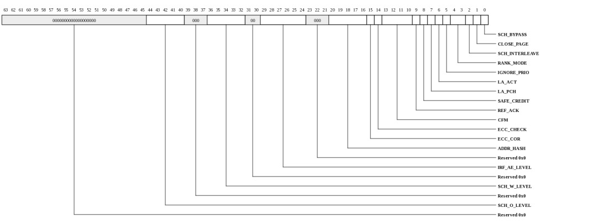
| Bits | Name | Type | Reset | Description
| 44:40 | SCH_O_LEVEL | RW | 8 | When the number of ordered requests pending in the scheduler is greater than the threshold, it will have a higher priority and hence will be dispatched soon. | 36:32 | SCH_W_LEVEL | RW | 12 | When the number of write requests pending in the scheduler is greater than the threshold, it will have a higher priority and hence will be dispatched soon. | 29:24 | IRF_AE_LEVEL | RW | 0 | Ingress retime FIFO almost empty threshold level. This parameter applies read response packets with multiple flits. | 0: A read response packet will be sent to the RDN network as soon as it is received. Network bubbles may be inserted between the packet flits, due to the clock domain crossing. 1: A store-forward approach is used to remove the potential bubbles within one response packet. 20:16 | ADDR_HASH | RW | 0 | Memory address hashing selection. | ...[4]: 1 = enable rank address [1] hashing ...[3]: 1 = enable rank address [0] hashing ...[2]: 1 = enable bank address [2] hashing ...[1]: 1 = enable bank address [1] hashing ...[0]: 1 = enable bank address [0] hashing 15 | ECC_COR | RW | 0 | 1: enable ECC correction to fix any detected single bit error | 14 | ECC_CHECK | RW | 0 | 1: check ECC status and an ECC error interrupt will be dispatched if an error is detected. Valid when ECC_COR = 1. | 13:10 | CFM | RW | 0 | Configurable Function Mode. Configured as 0 in mission mode. | 9 | REF_ACK | RW | 0 | 1: enable refresh acknowledge | 8 | SAFE_CREDIT | RW | 0 | scheduler internal credit mode. | 1: safe credit (reserve one credit), safe credit might be needed only during diagnostic. 0: use all credits 7 | LA_PCH | RW | 1 | 1: enable lookahead precharge to hide DRAM overhead | 6 | LA_ACT | RW | 1 | 1: enable lookahead activation to hide DRAM overhead | 5 | IGNORE_PRIO | RW | 0 | 1: scheduler ignores high-priority packets, 0: scheduler tries to schedule high-priority first. | 4:3 | RANK_MODE | RW | 3 | scheduler rank optimization mode for page miss queues. | 00: disable rank priority. 01: a different rank has a higher priority. 10: same rank has a higher priority. 11: same rank has a higher priority (more weight on tFAW optimization). 2 | SCH_INTERLEAVE | RW | 1 | 1: enable QDN interleaving in the scheduler. Typically this feature should be enabled to improve the memory controller performance. | 1 | CLOSE_PAGE | RW | 0 | 1: enable static close page policy. 0: open page policy | 0 | SCH_BYPASS | RW | 0 | 1: bypass scheduler so that QDN requests are dispatched first come first serve. | |
|---|
Scheduler Starvation (MSH_STARVATION: 0x0110)
If a memory request is pending in a scheduler queue for a long time, then this queue is considered to be starved. Higher priority will be assigned to this queue.This register is protected at level 1
| Bits | Name | Type | Reset | Description
| 31:24 | W | RW | 20h | Number of requests served from other queues after which this write queue is considered to be starved. | 23:16 | O | RW | 20h | Number of requests served from other queues after which this ordered queue is considered to be starved. | 15:8 | R | RW | 20h | Number of requests served from other queues after which this read-miss queue is considered to be starved. | 7:0 | H | RW | 20h | Number of requests served from other queues after which this read-hit queue is considered to be starved. | |
|---|
Scheduler Active (MSH_ACTIVE: 0x0118)
Once a scheduler queue is selected, the queue should stay active (unless empty) depending on active threshold.This register is protected at level 1
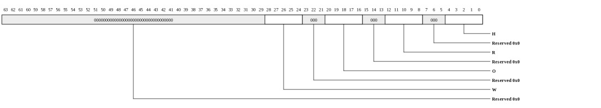
| Bits | Name | Type | Reset | Description
| 28:24 | W | RW | 15 | Specifies the minimal number requests to be served by this write queue (unless empty) until another queue can be selected. | 20:16 | O | RW | 15 | Specifies the minimal number requests to be served by this ordered queue (unless empty) until another queue can be selected. | 12:8 | R | RW | 7 | Specifies the minimal number requests to be served by this read-miss queue (unless empty) until another queue can be selected. | 4:0 | H | RW | 7 | Specifies the minimal number requests to be served by this read-hit queue (unless empty) until another queue can be selected. | |
|---|
Address Range (MSH_ADDRESS_RANGE: 0x0120)
Address RangeThis register is protected at level 1
| Bits | Name | Type | Reset | Description
| 22:12 | ADDR_MASK | RW | 0 | Specifies the address bits that are to be compared with ADDR_HIGH. This is determined by the total memory capacity that are attached to this memory controller. The default value indicates that 512 G bytes external memory are used. |
10:0 | ADDR_HIGH | RW | 0 | Specifies the expected high order address bits received by the memory controller. | The ADDR_HIGH will be compared with the byte address[38:28] of the memory reference and then is masked by the ADDR_MASK. If there is a match, then address range is correct. |
|---|
EBUF Threshold High Level (MSH_EBUF_THRESHOLD_HI: 0x0130)
EBUF Threshold High LevelThis register is protected at level 1

| Bits | Name | Type | Reset | Description
| 24:16 | DRAM_LEVEL | RW | 100h | Specifies the high threshold level when the egress data RAM is considered overflow. The DRAM_HI_EVENT interrupt will be issued when a new QDN request is received and more than DRAM_LEVEL QDN requests are still pending in the egress data RAM. The egress data RAM is used to store the write data of memory requests. | 8:0 | CRAM_LEVEL | RW | 100h | Specifies the high threshold level when the egress command RAM is considered overflow. The CRAM_HI_EVENT interrupt will be issued when a new QDN request is received and more than CRAM_LEVEL QDN requests are still pending in the egress command RAM.The egress command RAM is used to store the read and write requests. | |
|---|
EBUF Threshold Low Level (MSH_EBUF_THRESHOLD_LO: 0x0138)
EBUF Threshold Low LevelThis register is protected at level 1
| Bits | Name | Type | Reset | Description
| 24:16 | DRAM_LEVEL | RW | 0 | Specifies the threshold level when the egress data RAM is considered underflow. The DRAM_UNDERFLOW interrupt will be issued when a new QDN request is received and less than DRAM_LEVEL QDN requests are still pending in the egress data RAM. The egress data RAM is used to store the write data of memory requests. | 8:0 | CRAM_LEVEL | RW | 0 | Specifies the threshold level when the egress command RAM is considered underflow. The CRAM_UNDERFLOW interrupt will be issued when a new QDN request is received and less than CRAM_LEVEL QDN requests are still pending in the egress command RAM. The egress command RAM is used to store the read and write requests. | |
|---|
Priority Control 0 (MSH_PRIO_CTL0: 0x0140)
Priority Control 0A packet will be selected as high priority if:
((packet_src and SRC_ENABLE == SRC) or not SRC_ENABLE) and
((packet_is_from_qdn0 and QDN[0]) or (packet_is_from_qdn1 and QDN[1])) and
((packet_is_tile_read and OP[0]) or (packet_is_io_read and OP[1]) or (packet_is_non_masked_write and OP[2]) or (packet_is_masked_write and OP[3])) and
((packet_is_for_instruction and ATTR[0]) or (packet_requires_write_ack and ATTR[1]) or (packet_requires_response_copy and ATTR[2]) or (ATTR[3]))
This register is protected at level 1

| Bits | Name | Type | Reset | Description
| 25:22 | ATTR | RW | 0 | Attribute bit selection. | [0]: = 1 istream (not dstream) packets will be selected. [1]: = 1 write packets that require ack (not no-ack) will be selected. [2]: = 1 read packets that require response copy will be selected. [3]: = 1 packets with any attribute will be selected. 21:18 | OP | RW | 0 | Operation bit selection. | [0]: = 1 TILE read packets will be selected. [1]: = 1 IO read packets will be selected. [2]: = 1 non-masked write packets will be selected. [3]: = 1 masked packets will be selected. 17:16 | QDN | RW | 0 | QDN bit selection. | [0]: = 1 QDN0 packets will be selected. [1]: = 1 QDN1 packets will be selected. 15:8 | SRC_ENABLE | RW | 0 | Source selection enable. | 7:0 | SRC | RW | 0 | Source selection (x,y), used together with SRC_ENABLE. | |
|---|
Priority Control 1 (MSH_PRIO_CTL1: 0x0148)
Refer to Priority Control 0 for more detailsThis register is protected at level 1

| Bits | Name | Type | Reset | Description
| 25:22 | ATTR | RW | 0 | Attribute bit selection. | 21:18 | OP | RW | 0 | Operation bit selection. | 17:16 | QDN | RW | 0 | QDN bit selection. | 15:8 | SRC_ENABLE | RW | 0 | Source selection enable. | 7:0 | SRC | RW | 0 | Source selection (x,y), used together with SRC_ENABLE. | |
|---|
Priority Control 2 (MSH_PRIO_CTL2: 0x0150)
Refer to Priority Control 0 for more detailsThis register is protected at level 1
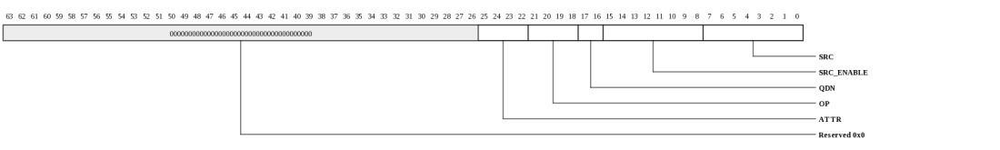
| Bits | Name | Type | Reset | Description
| 25:22 | ATTR | RW | 0 | Attribute bit selection. | 21:18 | OP | RW | 0 | Operation bit selection. | 17:16 | QDN | RW | 0 | QDN bit selection. | 15:8 | SRC_ENABLE | RW | 0 | Source selection enable. | 7:0 | SRC | RW | 0 | Source selection (x,y), used together with SRC_ENABLE. | |
|---|
Priority Control 3 (MSH_PRIO_CTL3: 0x0158)
Refer to Priority Control 0 for more detailsThis register is protected at level 1

| Bits | Name | Type | Reset | Description
| 25:22 | ATTR | RW | 0 | Attribute bit selection. | 21:18 | OP | RW | 0 | Operation bit selection. | 17:16 | QDN | RW | 0 | QDN bit selection. | 15:8 | SRC_ENABLE | RW | 0 | Source selection enable. | 7:0 | SRC | RW | 0 | Source selection (x,y), used together with SRC_ENABLE. | |
|---|
Priority Control 4 (MSH_PRIO_CTL4: 0x0160)
Refer to Priority Control 0 for more detailsThis register is protected at level 1

| Bits | Name | Type | Reset | Description
| 25:22 | ATTR | RW | 0 | Attribute bit selection. | 21:18 | OP | RW | 0 | Operation bit selection. | 17:16 | QDN | RW | 0 | QDN bit selection. | 15:8 | SRC_ENABLE | RW | 0 | Source selection enable. | 7:0 | SRC | RW | 0 | Source selection (x,y), used together with SRC_ENABLE. | |
|---|
Priority Control 5 (MSH_PRIO_CTL5: 0x0168)
Refer to Priority Control 0 for more detailsThis register is protected at level 1

| Bits | Name | Type | Reset | Description
| 25:22 | ATTR | RW | 0 | Attribute bit selection. | 21:18 | OP | RW | 0 | Operation bit selection. | 17:16 | QDN | RW | 0 | QDN bit selection. | 15:8 | SRC_ENABLE | RW | 0 | Source selection enable. | 7:0 | SRC | RW | 0 | Source selection (x,y), used together with SRC_ENABLE. | |
|---|
IPI controller route control (MSH_IPIC_ROUTE: 0x0180)
IPI controller route controlThis register is protected at level 1
| Bits | Name | Type | Reset | Description
| 1:0 | ORDER_MODE | RW | 0 | Route order mode: | 0: use same setting from MSH_CFG_DEV_CTL.RDN_ROUTE_ORDER 1: reserved 2: use 0 for RDN_ROUTE_ORDER 3: use 1 for RDN_ROUTE_ORDER |
|---|
Pause (MSH_PAUSE: 0x0190)
PauseThis register is protected at level 1

| Bits | Name | Type | Reset | Description
| 0 | CTL | WO | 0 | Write 1 to put the controller in pause mode for 128 cycles. Only diagnostic packets, if exist, can go through. |
|---|
Scrub (MSH_SCRUB: 0x01a0)
ScrubThis register is protected at level 1
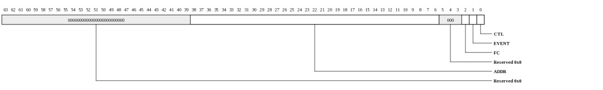
| Bits | Name | Type | Reset | Description
| 38:6 | ADDR | RW | 0 | scrub address PA[38:6]. The starting address is always 64 bytes aligned, i.e. PA[5:0] = 0. | 2 | FC | RW | 1 | 1: scrub request is throttled by the scheduler, scrub operation will be put on hold if there are too many memory requests pending. | 1 | EVENT | RW | 0 | 1: dispatches an SCRUB_EVENT interrupt when the scrub command is scheduled. 0: do not dispatch interrupt. | 0 | CTL | RW | 0 | Write 1 to start a memory scrub operation (i.e. read 64 bytes from the DRAM and write back the read data. Any single bit can be corrected if ECC is enabled) | Read to indicate the scrub status. 1: scrub command is pending. 0: scrub command is scheduled. |
|---|
DDR3 Low Power (MSH_DDR3_LOW_POWER: 0x0200)
DDR3 Low PowerThis register is protected at level 1
| Bits | Name | Type | Reset | Description
| 31:16 | SELF_REFRESH | RW | 0 | [0] 1: send self-refresh sequence to DDR3 memories rank 0. | [1] 1: send self-refresh sequence to DDR3 memories rank 1. [2] 1: send self-refresh sequence to DDR3 memories rank 2. [n] 1: send self-refresh sequence to DDR3 memories rank n. 15:0 | POWERDOWN | RW | 0 | [0] 1: send power-down sequence to DDR3 memories rank 0 | [1] 1: send power-down sequence to DDR3 memories rank 1. [2] 1: send power-down sequence to DDR3 memories rank 2. [n] 1: send power-down sequence to DDR3 memories rank n. |
|---|
DDR3 Control (MSH_DDR3_CONTROL: 0x0208)
DDR3 ControlThis register is protected at level 1
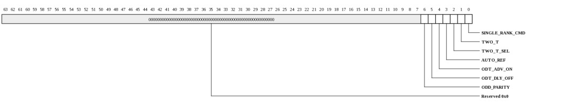
| Bits | Name | Type | Reset | Description
| 6 | ODD_PARITY | RW | 0 | 1: set one to force a parity error. RDIMM uses even parity. This bit should be configured as 0 normally. | 5 | ODT_DLY_OFF | RW | 0 | 1: Delay ODT turn-off by one clock. This bit should be configured as 0 normally. | 4 | ODT_ADV_ON | RW | 0 | 1: Advances ODT turn-on by one clock (only supported for CL=5, CL=6). This bit should be configured as 0 normally. | 3 | AUTO_REF | RW | 1 | 1: enable DRAM auto refresh. 0: illegal in the mission mode, AUTO_REF should be disabled during the user driven initialization, such as RDIMM control word programming (via USER_INIT_1). | 2 | TWO_T_SEL | RW | 1 | 1: cs_n asserted during the second cycle. This bit is valid during 2T timing and this bit should be configured as 1 normally. | 1 | TWO_T | RW | 0 | 1: enable 2T timing (to extend address/command). 2T timing is not supported when DDR3_DIMM_CFG.REGDIMM is enabled (high). | 0 | SINGLE_RANK_CMD | RW | 1 | 1: single rank command only (no command will be asserted on more than one chip select). | To program the control word on RDIMM, SINGLE_RANK_CMD must be configured as 1 so that the controller will know that the multiple rank selections are not intended for multiple ranks. To reduce instantaneous current, SINGLE_RANK_CMD can be configured as 1 so that controller could perform staggered refresh commands, e.g. refresh one rank at time in consecutive cycles. 0: command could be asserted on more than one chip select, this mode. This setting can be applied to RDIMM. |
|---|
DDR3 Device (MSH_DDR3_DEVICE: 0x0210)
DDR3 device shall be configured as the followings.| Configuration | Bank Bits | Row Bits | Column Bits
| 512 Mb_x4 | 3 | 13 | 11 | 512 Mb_x8 | 3 | 13 | 10 | 512 Mb_x16 | 3 | 12 | 10 | 1 Gb_x4 | 3 | 14 | 11 | 1 Gb_x8 | 3 | 14 | 10 | 1 Gb_x16 | 3 | 13 | 10 | 2 Gb_x4 | 3 | 15 | 11 | 2 Gb_x8 | 3 | 15 | 10 | 2 Gb_x16 | 3 | 14 | 10 | 4 Gb_x4 | 3 | 16 | 11 | 4 Gb_x8 | 3 | 16 | 10 | 4 Gb_x16 | 3 | 15 | 10 | 8 Gb_x4 | 3 | 16 | 12 | 8 Gb_x8 | 3 | 16 | 11 | 8 Gb_x16 | 3 | 16 | 10 | |
|---|
This register is protected at level 1
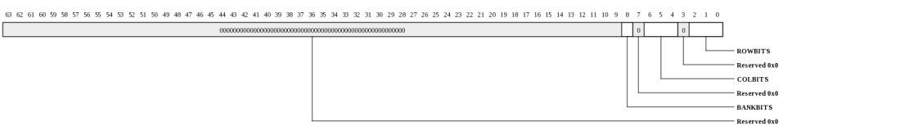
| Bits | Name | Type | Reset | Description
| 8 | BANKBITS | RW | 1 | Bank address bits. Valid settings: |
6:4 | COLBITS | RW | 5 | Column address bits. Valid settings: |
2:0 | ROWBITS | RW | 3 | Row address bits. Valid settings: |
|
|---|
DDR3 Row Timing (MSH_DDR3_ROW_TIMING: 0x0218)
DDR3 Row TimingThis register is protected at level 1
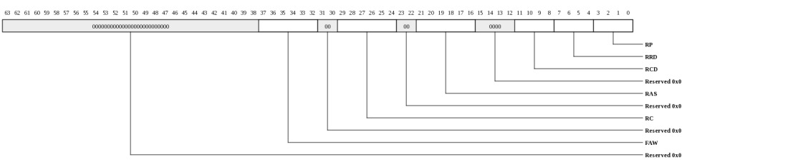
| Bits | Name | Type | Reset | Description
| 37:32 | FAW | RW | 20h | Four bank activate period (tFAW), specified in clocks. Valid values are 7 to 43. | 29:24 | RC | RW | 25h | Active to active/auto-refresh (tRC), specified in clocks. Valid values are 5 to 52. | 21:16 | RAS | RW | 1ch | Active to precharge (tRAS), specified in clocks. Valid values are 4 to 38. | 11:8 | RCD | RW | 9 | Active to read/write delay (tRCD), specified in clocks. Valid values are 2 to 15. | 7:4 | RRD | RW | 6 | Active bank a to active bank b command time (tRRD), specified in clocks. RP must be greater than or equal to cfg_RRD. Valid values are 2 to 8. | 3:0 | RP | RW | 9 | Precharge command period (tRP), specified in clocks. RP must be greater than or equal to RRD. Valid values are 1 to 15. | |
|---|
DDR3 Column Timing (MSH_DDR3_COL_TIMING: 0x0220)
DDR3 Column TimingThis register is protected at level 1
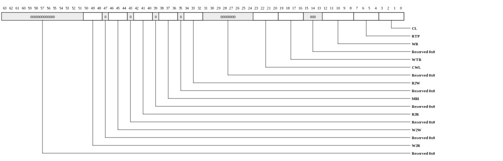
| Bits | Name | Type | Reset | Description
| 50:48 | W2R | RW | 1 | Minimum delay from write to read (different ranks), specified in clocks. Valid values are 1 to 7. | When a read follows a write and the read and write commands are to the same rank, the turnaround time is specified by MSH_DDR3_COL_TIMING.WTR. 46:44 | W2W | RW | 1 | Minimum delay from write to write (different ranks), specified in clocks. This specifies the minimum number of clocks between the end of the last data phase on the DQ bus of a write to one rank to the beginning of the first data phase on the DQ bus of a write to another rank. If SDRAM ODT is not used, this can be set to 0 since bus turnaround is not required between back-to-back writes which are switching ranks. Valid values are 0 to 7. | 42:40 | R2R | RW | 1 | Minimum delay from read to read (different ranks), specified in clocks. Valid values are 1 to 7. | 38:36 | MRI | RW | 0 | Minimum Read Idle - minimum number of clocks of idle time on the bus between non-consecutive read commands. If any two reads are not back-to-back, this is the minimum idle time (in clocks) on the data bus between the reads. Values of 0 and 1 cause no minimum bus idle time between non-consecutive reads to be enforced. There is no difference in behavior between the 0 and 1 settings. | 34:32 | R2W | RW | 1 | Delay between the end of a read DQS postamble to the start of a write preamble, specified in clocks. | 23:20 | CWL | RW | 8 | CAS write latency, specified in clocks. Valid values are 5 to 12. | 19:16 | WTR | RW | 6 | Write to read command delay (tWTR), specified in clocks. Valid values are 2 to 9. | 12:8 | WR | RW | 12 | Write recovery time (tWR) specified in clocks. DDR3 specifications limit legal values to: 5,6,7,8,10,12. Values 9 and 11 are illegal, so next larger should be chosen. | 7:4 | RTP | RW | 6 | Read To Precharge command delay (tRTP), specified in clocks. Valid values are 4 to 9. | 3:0 | CL | RW | 9 | CAS read latency, specified in clocks. Valid values are 5 to 14. | |
|---|
DDR3 Misc Timing (MSH_DDR3_MISC_TIMING: 0x0228)
DDR3 Misc TimingThis register is protected at level 1
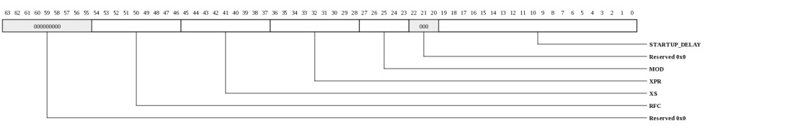
| Bits | Name | Type | Reset | Description
| 54:46 | RFC | RW | 58h | Refresh to active/refresh (tRFC), specified in clocks. Valid values are 6 to 511. | 45:37 | XS | RW | 60h | exist SELF REFRESH to refresh to non-DLL command (tXS), specified in clocks. Valid values are 5 to 511. | 36:28 | XPR | RW | 60h | Exit reset from CKE HIGH to a valid command, specified in clocks. Valid values are 5 to 511. | 27:23 | MOD | RW | 12 | Mode Register Set command to any command (tMOD), specified in clocks. Valid values are 12 to 16. | 19:0 | STARTUP_DELAY | RW | 13880h | Delay after a reset event that the controller waits before initialization, specified in clocks. 80000 cycles of 400 MHz are equal to 200 micro-seconds. Per JEDEC standards, devices require this delay to be a minimum of 200 us. | |
|---|
DDR3 Refresh Timing (MSH_DDR3_REF_TIMING: 0x0230)
DDR3 Refresh TimingThis register is protected at level 1
| Bits | Name | Type | Reset | Description
| 15:0 | REF_PER | RW | 0c35h | Refresh period, specified in clocks. Valid values are 10 to 65535. | |
|---|
DDR3 Read ODT Rank 0 - 3 (MSH_DDR3_READ_ODT_30: 0x0238)
DDR3 Read ODT for rank 0 - rank 3. ODT_RD_MAP_CSx determines which external ODT pins are asserted during reads.This register is protected at level 1
| Bits | Name | Type | Reset | Description
| 63:48 | ODT_RD_MAP_CS3 | RW | 0 | ODT selection matrix for reads (when rank 3 is selected). | 47:32 | ODT_RD_MAP_CS2 | RW | 0 | ODT selection matrix for reads (when rank 2 is selected). | 31:16 | ODT_RD_MAP_CS1 | RW | 0 | ODT selection matrix for reads (when rank 1 is selected). | 15:0 | ODT_RD_MAP_CS0 | RW | 0 | ODT selection matrix for reads (when rank 0 is selected). | |
|---|
DDR3 Read ODT Rank 4 - 7 (MSH_DDR3_READ_ODT_74: 0x0240)
DDR3 Read ODT for rank 4 - rank 7. ODT_RD_MAP_CSx determines which external ODT pins are asserted during reads.This register is protected at level 1
| Bits | Name | Type | Reset | Description
| 63:48 | ODT_RD_MAP_CS7 | RW | 0 | ODT selection matrix for reads (when rank 7 is selected). | 47:32 | ODT_RD_MAP_CS6 | RW | 0 | ODT selection matrix for reads (when rank 6 is selected). | 31:16 | ODT_RD_MAP_CS5 | RW | 0 | ODT selection matrix for reads (when rank 5 is selected). | 15:0 | ODT_RD_MAP_CS4 | RW | 0 | ODT selection matrix for reads (when rank 4 is selected). | |
|---|
DDR3 Read ODT Rank 8 - 11 (MSH_DDR3_READ_ODT_B8: 0x0248)
DDR3 Read ODT for rank 8 - rank 11. ODT_RD_MAP_CSx determines which external ODT pins are asserted during reads.This register is protected at level 1
| Bits | Name | Type | Reset | Description
| 63:48 | ODT_RD_MAP_CS11 | RW | 0 | ODT selection matrix for reads (when rank 11 is selected). | 47:32 | ODT_RD_MAP_CS10 | RW | 0 | ODT selection matrix for reads (when rank 10 is selected). | 31:16 | ODT_RD_MAP_CS9 | RW | 0 | ODT selection matrix for reads (when rank 9 is selected). | 15:0 | ODT_RD_MAP_CS8 | RW | 0 | ODT selection matrix for reads (when rank 8 is selected). | |
|---|
DDR3 Read ODT Rank 12 - 15 (MSH_DDR3_READ_ODT_FC: 0x0250)
DDR3 Read ODT for rank 12 - rank 15. ODT_RD_MAP_CSx determines which external ODT pins are asserted during reads.This register is protected at level 1
| Bits | Name | Type | Reset | Description
| 63:48 | ODT_RD_MAP_CS15 | RW | 0 | ODT selection matrix for reads (when rank 15 is selected). | 47:32 | ODT_RD_MAP_CS14 | RW | 0 | ODT selection matrix for reads (when rank 14 is selected). | 31:16 | ODT_RD_MAP_CS13 | RW | 0 | ODT selection matrix for reads (when rank 13 is selected). | 15:0 | ODT_RD_MAP_CS12 | RW | 0 | ODT selection matrix for reads (when rank 12 is selected). | |
|---|
DDR3 Write ODT Rank 0 - 3 (MSH_DDR3_WRITE_ODT_30: 0x0258)
DDR3 Write ODT for rank 0 - rank 3. ODT_WR_MAP_CSx determines which external ODT pins are asserted during writes.For example,
{ODT_WR_MAP_CS3, ODT_WR_MAP_CS2, ODT_WR_MAP_CS1, ODT_WR_MAP_CS0} = {0x8, 0x4, 0x2, 0x1}
when rank0 is to be written, 0x1 specifies the ODT matrix (i.e. enables external ODT[0])
when rank1 is to be written, 0x2 specifies the ODT matrix (i.e. enables external ODT[1])
when rank2 is to be written, 0x4 specifies the ODT matrix (i.e. enables external ODT[2])
when rank3 is to be written, 0x8 specifies the ODT matrix (i.e. enables external ODT[3])
{ODT_WR_MAP_CS3, ODT_WR_MAP_CS2, ODT_WR_MAP_CS1, ODT_WR_MAP_CS0} = {0x3, 0x3, 0xc, 0xc}
when rank0 is to be written, 0xc specifies the ODT matrix (i.e. enables external ODT[3] and ODT[2])
when rank1 is to be written, 0xc specifies the ODT matrix (i.e. enables external ODT[3] and ODT[2])
when rank2 is to be written, 0x3 specifies the ODT matrix (i.e. enables external ODT[1] and ODT[0])
when rank3 is to be written, 0x3 specifies the ODT matrix (i.e. enables external ODT[1] and ODT[0])
This register is protected at level 1
| Bits | Name | Type | Reset | Description
| 63:48 | ODT_WR_MAP_CS3 | RW | 0 | ODT selection matrix for writes (when rank 3 is selected). | 47:32 | ODT_WR_MAP_CS2 | RW | 0 | ODT selection matrix for writes (when rank 2 is selected). | 31:16 | ODT_WR_MAP_CS1 | RW | 0 | ODT selection matrix for writes (when rank 1 is selected). | 15:0 | ODT_WR_MAP_CS0 | RW | 0 | ODT selection matrix for writes (when rank 0 is selected). | |
|---|
DDR3 Write ODT Rank 4 - 7 (MSH_DDR3_WRITE_ODT_74: 0x0260)
DDR3 Write ODT for rank 4 - rank 7. ODT_WR_MAP_CSx determines which external ODT pins are asserted during writes.This register is protected at level 1
| Bits | Name | Type | Reset | Description
| 63:48 | ODT_WR_MAP_CS7 | RW | 0 | ODT selection matrix for writes (when rank 7 is selected). | 47:32 | ODT_WR_MAP_CS6 | RW | 0 | ODT selection matrix for writes (when rank 6 is selected). | 31:16 | ODT_WR_MAP_CS5 | RW | 0 | ODT selection matrix for writes (when rank 5 is selected). | 15:0 | ODT_WR_MAP_CS4 | RW | 0 | ODT selection matrix for writes (when rank 4 is selected). | |
|---|
DDR3 Write ODT Rank 8 - 11 (MSH_DDR3_WRITE_ODT_B8: 0x0268)
DDR3 Write ODT for rank 8 - rank 11. ODT_WR_MAP_CSx determines which external ODT pins are asserted during writes.This register is protected at level 1
| Bits | Name | Type | Reset | Description
| 63:48 | ODT_WR_MAP_CS11 | RW | 0 | ODT selection matrix for writes (when rank 11 is selected). | 47:32 | ODT_WR_MAP_CS10 | RW | 0 | ODT selection matrix for writes (when rank 10 is selected). | 31:16 | ODT_WR_MAP_CS9 | RW | 0 | ODT selection matrix for writes (when rank 9 is selected). | 15:0 | ODT_WR_MAP_CS8 | RW | 0 | ODT selection matrix for writes (when rank 8 is selected). | |
|---|
DDR3 Write ODT Rank 12 - 15 (MSH_DDR3_WRITE_ODT_FC: 0x0270)
DDR3 Write ODT for rank 12 - rank 15. ODT_WR_MAP_CSx determines which external ODT pins are asserted during writes.This register is protected at level 1
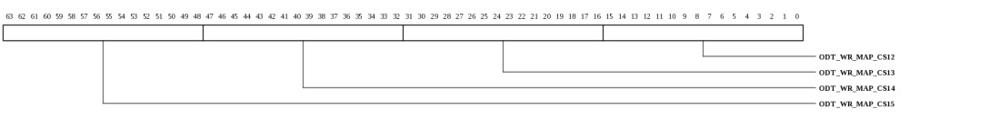
| Bits | Name | Type | Reset | Description
| 63:48 | ODT_WR_MAP_CS15 | RW | 0 | ODT selection matrix for writes (when rank 15 is selected). | 47:32 | ODT_WR_MAP_CS14 | RW | 0 | ODT selection matrix for writes (when rank 14 is selected). | 31:16 | ODT_WR_MAP_CS13 | RW | 0 | ODT selection matrix for writes (when rank 13 is selected). | 15:0 | ODT_WR_MAP_CS12 | RW | 0 | ODT selection matrix for writes (when rank 12 is selected). | |
|---|
DDR3 ODT DELAY (MSH_DDR3_ODT_DELAY: 0x0278)
Minimum ODT delay from different ranks.This register is protected at level 1
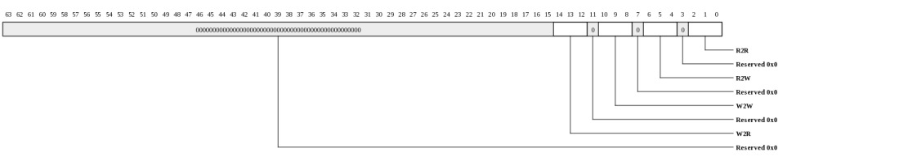
| Bits | Name | Type | Reset | Description
| 14:12 | W2R | RW | 1 | Minimum delay from write to read of different ranks when ODT change is required. | 10:8 | W2W | RW | 1 | Minimum delay from write to write of different ranks when ODT change is required. | 6:4 | R2W | RW | 1 | Minimum delay from read to write of different ranks when ODT change is required. | 2:0 | R2R | RW | 1 | Minimum delay from read to read of different ranks when ODT change is required. | |
|---|
DDR3 Mode Register 0 (MSH_DDR3_MR0: 0x0280)
DDR3 Mode Register 0. CAS Latency and Write recovery are configured in DDR3_COL_TIMING register.This register is protected at level 1
| Bits | Name | Type | Reset | Description
| 2 | BT | RW | 0 | EMRS burst type, 0: sequential, 1: interleaved | 1:0 | BL | RW | 0 | burst length mode | 0: BL8 1/2/3: reserve |
|---|
DDR3 Mode Register 1 (MSH_DDR3_MR1: 0x0288)
DDR3 Mode Register 1This register is protected at level 1
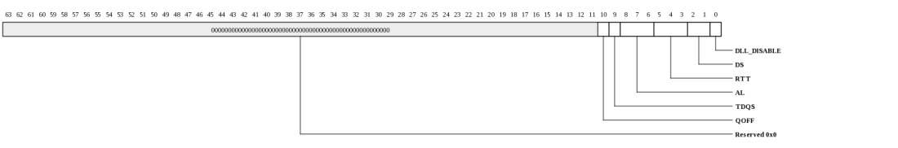
| Bits | Name | Type | Reset | Description
| 10 | QOFF | RW | 0 | 1: EMRS output buffer disable. This bit controls bit 12 of the Mode Register 1 (MR1) during initialization. Typically set to 0 to enable data and strobe outputs from the SDRAM devices. Can be set to 1 for IDD characterization of read current. | 9 | TDQS | RW | 0 | 1: enable EMRS Termination DQS enable. This controls bit 11 of MR1 during initialization. This bit must be disabled for x4 and x16 configurations. | 0: disable TDQS / enable data mask functionality 1: enable TDQS / disable data mask functionality 8:6 | AL | RW | 0 | Additive latency mode | 0: AL = 0 (disabled) 1: AL = CL - 1 2: AL = CL - 2 5:3 | RTT | RW | 1 | EMRS ODT effective resistance Rtt setting | 0: MR1[9,6,2] = 000 - ODT disabled, 1: MR1[9,6,2] = 001 - RZQ/4 (60 ohms nominal) 2: MR1[9,6,2] = 010 - RZQ/2 (120 ohms nominal) 3: MR1[9,6,2] = 011 - RZQ/6 (40 ohms nominal) 4: MR1[9,6,2] = 100 - RZQ/12 (20 ohms nominal) reads only 5: MR1[9,6,2] = 101 - RZQ/8 (30 ohms nominal) reads only 2:1 | DS | RW | 0 | DDR3 output driver strength setting | 0: MR1[5]=0, MR1[1]=0, RZQ/6 (40 ohms) 1: MR1[5]=0, MR1[1]=1, RZQ/7 (34 ohms) 2: MR1[5]=1, MR1[1]=0, reserved 3: MR1[5]=1, MR1[1]=1, reserved 0 | DLL_DISABLE | RW | 0 | 1: EMRS DLL disable | |
|---|
DDR3 MR2 (MSH_DDR3_MR2: 0x0290)
DDR3 MR2This register is protected at level 1
| Bits | Name | Type | Reset | Description
| 6:5 | RTT_WR | RW | 0 | DDR3 on-die termination effective resistance setting programmed into MR2 as follows | 0: MR2[10:9] = 00 - Rtt_wr disabled. 1: MR2[10:9] = 01 - RZQ/4. 2: MR2[10:9] = 10 - RZQ/2. 4 | SRT | RW | 0 | Self-Refresh Temperature. Refer to DRAM vendor data sheet. | 3 | ASR | RW | 0 | Auto Self-Refresh. Refer to DRAM vendor data sheet. | 2:0 | PASR | RW | 0 | Partial Array Self-Refresh. Refer to DRAM vendor data sheet. | 0: MR[2:0] = 000. 1: MR[2:0] = 001. 2: MR[2:0] = 010. 3: MR[2:0] = 011. 4: MR[2:0] = 100. 5: MR[2:0] = 101. 6: MR[2:0] = 110. 7: MR[2:0] = 111. Note: Partial Array Self-Refresh is optional per JEDEC standand. |
|---|
DDR3 MR3 (MSH_DDR3_MR3: 0x0298)
DDR3 MR3This register is protected at level 1
| Bits | Name | Type | Reset | Description
| 15:0 | MR3 | RW | 0 | EMR3 default value. Most DDR3 SDRAM devices specify all of these bits as reserved (must be set to 0). | |
|---|
DDR3 ZQ Calibration (MSH_DDR3_ZQ: 0x02a0)
User initiated DDR3 ZQ CalibrationAutomatic ZQ Calibration: write(AUTO_CAL_EN=1, CAL_REQ=0, CAL_TYPE, CAL_PER);
Manual ZQ Calibration: write(AUTO_CAL_EN=0, CAL_REQ, CAL_TYPE, CAL_PER);
Upon self refresh exit, an explicit ZQCL is required if ZQ calibration is desired.
This register is protected at level 1
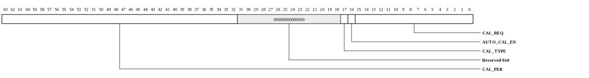
| Bits | Name | Type | Reset | Description
| 63:32 | CAL_PER | RW | 00100000h | Period between automatic ZQ calibration commands issued by the controller, specified in clocks. Valid values are 10 to (2^31-1). | The frequency of ZQ calibration commands will be system dependent, e.g. voltage and temperature drift rates. When the ZQ timer times out, the controller issues an automatic ZQ calibration command to one selected rank, and the selected rank will be rotated for the next ZQ calibration. When the ZQ timer times out, the CAL_PER will be applied to the timer. Note that a ZQ resistor may be shared between ranks on certain DIMMs, and the ZQ calibration can not be performed at the same time on those ranks. 17 | CAL_TYPE | RW | 0 | Type of ZQ calibration to be performed during automatic periodic ZQ calibrations or when user asserts CAL_REQ(s).Long ZQ calibration is used to perform the initial calibration during power-up initialization sequence. Short ZQ calibration is used to perform periodic calibrations to account for voltage and temperature variations. |
16 | AUTO_CAL_EN | RW | 1 | Automatic ZQ Calibration Enable |
15:0 | CAL_REQ | WO | 0 | User-initiated ZQCS/ZQCL request. Writing one to this field will cause ZQCS or ZQCL (determined by CAL_TYPE) to be issued for the corresponding ranks at the next opportunity. | These signals are used when the manual control of ZQ calibration is desirable (AUTO_CAL_EN is set to 0). ...[0]: rank 0 ...[1]: rank 1 ...[2]: rank 2 ...[n]: rank n |
|---|
DDR3 User INIT 0 (MSH_DDR3_USER_INIT_0: 0x02a8)
DDR3 User INIT 0This register is protected at level 1
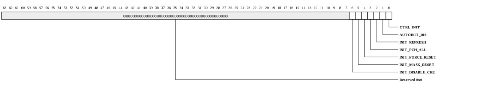
| Bits | Name | Type | Reset | Description
| 6 | INIT_DISABLE_CKE | RW | 0 | 1: Forces de-assertion of clock enable signal going to SDRAM. | 5 | INIT_MASK_RESET | RW | 0 | 1: Mask reset signal going to SDRAM (reset will not be asserted), in this way, the register on ther RDIMM will not be reset. INIT_MASK_RESET has higher priority than INIT_FORCE_RESET. | 4 | INIT_FORCE_RESET | RW | 0 | 1: Forces assertion reset signal going to SDRAM. | 3 | INIT_PCH_ALL | RW | 0 | 1: Issue precharge-all | 2 | INIT_REFRESH | RW | 0 | 1: Issue refresh | 1 | AUTOINIT_DIS | RW | 0 | 1: disables automatic initialization handled by DDR3 controller. | 0 | CTRL_INIT | RW | 0 | Re-issue the initialization sequence, initialization begins when it is de-activated. Software shall write 1 followed by writing 0 to this bit. | |
|---|
DDR3 User INIT 1 (MSH_DDR3_USER_INIT_1: 0x02b0)
DDR3 User INIT 1 for Mode register programming and RDIMM Control Word programming.| RDIMM | INIT_MR_CS selects multiple ranks | SINGLE_RANK_CMD | Descriptions
| 0 | 0 | 0 | Mode register programming on single rank | 0 | 0 | 1 | Mode register programming on single rank (it may not be illegal?) | 0 | 1 | 0 | Mode register programming on multiple ranks | 0 | 1 | 1 | Illegal (or controller serializes the mode register programming) | 1 | 0 | 0 | Mode register programming on single rank. Note that this configuration is illegal if the hardware initialization sequence is used. | 1 | 0 | 1 | Mode register programming on single rank (it may not be illegal?) | 1 | 1 | 0 | Illegal. Note that this configuration is illegal if the hardware initialization sequence is used. | 1 | 1 | 1 | Control Word Programming | |
|---|
This register is protected at level 1
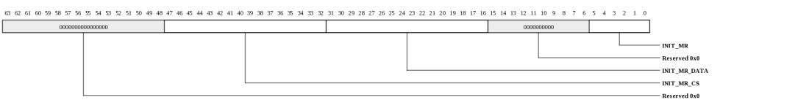
| Bits | Name | Type | Reset | Description
| 47:32 | INIT_MR_CS | RW | 0 | Rank selection for mode register programming, or RDIMM control word programming. | ...[0]: Rank 0 ...[1]: Rank 1 ...[2]: Rank 2 ...[n]: Rank n When MSH_DDR3_CONTROL.SINGLE_RANK_CMD=1, RDIMM control word programming can be performed if multiple ranks are selected, for example INIT_MR_CS=0x3. 31:16 | INIT_MR_DATA | RW | 0 | Data contents for Mode register programming, or RDIMM control word programming. | Mode register programming ...INIT_MR_DATA[15:0] are used to specify the mode register data contents. RDIMM control word programming: ...INIT_MR_DATA[11:8] are used to specify the control word register. ...INIT_MR_DATA[3:0] are used to specify the data contents for the control word register. 5:0 | INIT_MR | RW | 0 | Request for Mode register programming or RDIMM control word programming. | Mode register programming ...0: inactive ...1: MR0 programming request ...2: MR1 programming request ...4: MR2 programming request ...8: MR3 programming request ...16: MR1 write leveling enable request (set LEVEL bit and keep the other MR1 fields) ...32: MR1 write leveling disable request (clean LEVEL bit and keep the other MR1 fields) a. make sure that no memory read/write request has been scheduled. b. DDR3_CONTROL.AUTO_REF = 0; DDR3_ZQ.AUTO_CAL_EN = 0; c. configures the ranks (INIT_CS) d. configures the data to be programmed (INIT_DATA), when INIT_MR=1/2/4/8 e. enables MODE register programming (INIT_MR=1/2/4/8/16/32) f. poll until it is done (MSH_STATUS.INIT_ACK) g. disables MODE register programming (INIT_MR=0) h. DDR3_CONTROL.AUTO_REF = 1; DDR3_ZQ.AUTO_CAL_EN = 1; RDIMM control word programming ...0: inactive ...1: control word programming request a. make sure that no memory read/write request has been scheduled. b. DDR3_CONTROL.AUTO_REF = 0; DDR3_ZQ.AUTO_CAL_EN = 0; c. configures the ranks (INIT_CS) d. selects the control register and configures the data to be programmed (INIT_DATA) e. enables control word programming (INIT_MR=1) f. poll until it is done (MSH_STATUS.INIT_ACK) g. disables control word programming (INIT_MR=0) h. DDR3_CONTROL.AUTO_REF = 1; DDR3_ZQ.AUTO_CAL_EN = 1; |
|---|
DIMM Configuration (MSH_DDR3_DIMM_CFG: 0x02f0)
DIMM ConfigurationThis register is protected at level 1
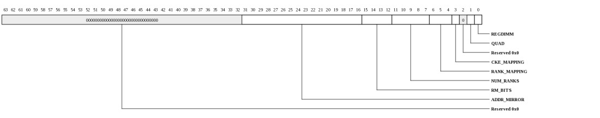
| Bits | Name | Type | Reset | Description
| 31:16 | ADDR_MIRROR | RW | 0 | Address mirroring may be used on certain DDR3 UDIMM modules to improve routability of the address bits which need to be routed to both ranks, on opposite sides of the DIMM module. When address mirroring is enabled on a rank, | A3 will be swapped with A4, A5 will be swapped with A6, A7 will be swapped with A8, BA0 will be swapped with BA1. Address mirroring on the DIMM layout. [0] 1: rank 0 uses address mirroring on the DIMM layout. [1] 1: rank 1 uses address mirroring on the DIMM layout. [2] 1: rank 2 uses address mirroring on the DIMM layout. [n] 1: rank n uses address mirroring on the DIMM layout. Note that RDIMM with multiple ranks may use address mirroring. The register on the RDIMM compensates for address mirroring by swapping bits on the address/control/command. The address mirroring is not visible to the memory controller, and ADDR_MIRROR should be configured as 0s. 15:12 | RM_BITS | RW | 0 | Rank Multiplication Bits. | 0000: no rank multiplication. 0001: RM=2x, Row[14] is the RM bit, 1 Gb DDR3 devices. 0010: RM=2x, Row[15] is the RM bit, 2 Gb DDR3 devices. 0100: RM=2x, Row[16] is the RM bit, 4 Gb DDR3 devices. 0011: RM=4x, Row[15:14] are the RM bits, 1 Gb DDR3 devices. 0110: RM=4x, Row[16:15] are the RM bits, 2 Gb DDR3 devices. 1100: RM=4x, Row[17:16] are the RM bits, 4 Gb DDR3 devices. 11:7 | NUM_RANKS | RW | 4 | Number of logical ranks populated on the board. Valid values are 1 to 16. | For example, two DIMM sockets are connected to the controller. If both sockets use quad-rank DIMMs, then NUM_RANKS = 8; If both sockets use dual-rank DIMMs, then NUM_RANKS = 4; If one socket uses quad-rank DIMMs, then NUM_RANKS = 4. 6:4 | RANK_MAPPING | RW | 0 | Provides mapping function from logical ranks (cs_n_l) to physical ranks (cs_n_p). |
3 | CKE_MAPPING | RW | 0 | Provides mapping function from logical CKE (cke_l) to physical CKE (cke_p). |
1 | QUAD | RW | 0 | 1: Quad-rank DIMM is populated. Quad-rank DIMMs have two CKE pins, each driving two ranks. The controller will put ranks into power down or self-refresh in pairs which share same CKE pins. | 0 | REGDIMM | RW | 0 | 1: registered DIMM is populated (it takes one cycle to register address/command/control) | |
|---|
DDR3 MODE Control (MSH_DDR3_MODE_CONTROL: 0x0300)
DDR3 MODE ControlThis register is protected at level 1
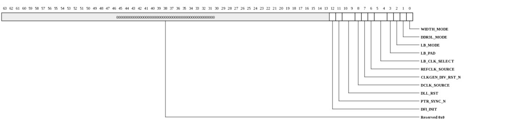
| Bits | Name | Type | Reset | Description
| 12 | DFI_INIT | RW | 0 | Control which declares the PHY is ready to receive transactions from the memory controller. The default is 0 which is de-asserted. Write 1 to assert. 11 | PTR_SYNC_N | RW | 0 | Reset control for the write and read pointers in the PHY. 0: assert reset control. 1: de-assert reset control. This must be de-asserted AFTER the DLL slave delay settings have been configured and the DLLs have locked. 10:9 | DLL_RST | RW | 3 | Reset control for the DLLs. [0] = 0: de-assert transmit and ACC DLL reset. [0] = 1: assert transmit and ACC DLL reset. [1] = 0: de-assert receive DLL reset. [1] = 1: assert receive DLL reset. 8 | DCLK_SOURCE | RW | 0 | Control of clock-switch which selects between reference clock (either internal or external) and divided PLL output. 0: selects reference clock. 1: selects high-frequency clock. 7 | CLKGEN_DIV_RST_N | RW | 0 | Reset control of D2XCLK divider flop. The default is 0 (asserted). 6 | REFCLK_SOURCE | RW | 0 | Controls whether the internal reference clock or an external reference clock is used. 0: for internal reference. 1: for external reference. 5:4 | LB_CLK_SELECT | RW | 0 | Controls which clock pad is the loopback clock source when in external loopback mode. There are 4 clock output pads, a 0x0 to 0x3 value selects a particular one. 3 | LB_PAD | RW | 0 | Controls whether, when in loopback mode, the data/clock source is internal (just prior to the pads), or external. The external loop is through the transmitter, with possible transmission-line/load, and receiver. 0: for internal mode. 1: for external mode. 2 | LB_MODE | RW | 0 | Controls whether the DDR interface is in functional or loopback test mode. 0: for functional mode. 1: for loopback mode. 1 | DDR3L_MODE | RW | 0 | Controls whether the DDR I/O buffers are operating at DDR3L voltage (1.35 V). 0: for 1.5 V mode. 1: for 1.35 V mode. 0 | WIDTH_MODE | RW | 0 | Controls whether the DDR interface is in nibble or byte width mode. 0: Byte mode is used when x8 or x16 wide DRAMs are attached. 1: Nibble mode is used when x4 wide DRAMs are attached. |
|---|
DDR3 CLKGEN PLL Control (MSH_DDR3_CLKGEN_PLL_CONTROL: 0x0308)
DDR3 CLKGEN PLL ControlThis register is protected at level 1

| Bits | Name | Type | Reset | Description
| 21 | LOCK | RO | 0 | PLL LOCK signal. Will be 1 when PLL is locked. 20:18 | RANGE | RW | 2 | PLL range value. Value must be selected based on table below. Divided reference frequency Value Bypass 0x0 14 - 16 MHz 0x1 16 - 26 MHz 0x2 (default) 26 - 42 MHz 0x3 42 - 65 MHz 0x4 65 - 104 MHz 0x5 104 - 166 MHz 0x6 166 - 200 MHz 0x7 17:15 | DIVQ | RW | 1 | PLL output divider value. Default is 0x1 (divide by 2). 14:7 | DIVF | RW | 3fh | PLL feedback divider value. Default is 0x3f (divide by 64). 6:2 | DIVR | RW | 4 | PLL reference divider value. Default is 0x4 (divide by 5). 1 | BYPASS | RW | 1 | Write 1 to assert PLL bypass. Write 0 to de-assert PLL bypass. | 0 | RST | RW | 1 | Write 1 to assert PLL reset. Write 0 to de-assert PLL reset. | |
|---|
DDR3 DESKEW PLL Control (MSH_DDR3_DESKEW_PLL_CONTROL: 0x0310)
DDR3 DESKEW PLL ControlThis register is protected at level 1
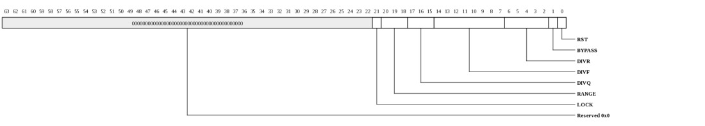
| Bits | Name | Type | Reset | Description
| 21 | LOCK | RO | 0 | PLL LOCK signal. Will be 1 when PLL is locked. 20:18 | RANGE | RW | 5 | PLL range value. Value must be selected based on table below. Divided reference frequency Value Bypass 0x0 14 - 16 MHz 0x1 16 - 26 MHz 0x2 26 - 42 MHz 0x3 42 - 65 MHz 0x4 65 - 104 MHz 0x5 (default) 104 - 166 MHz 0x6 166 - 200 MHz 0x7 17:15 | DIVQ | RW | 2 | PLL output divider value. Should be set to 0x2 for 1600 Mbps or 2133 Mbps. 14:7 | DIVF | RW | 7 | PLL feedback divider value. Should be set to 0x7 for 1600 Mbps or 2133 Mbps. 6:2 | DIVR | RW | 1 | PLL reference divider value. Should be set to 0x1 for 1600 Mbps or 2133 Mbps. 1 | BYPASS | RW | 1 | Write 1 to assert PLL bypass. Write 0 to de-assert PLL bypass. | 0 | RST | RW | 1 | Write 1 to assert PLL reset. Write 0 to de-assert PLL reset. | |
|---|
DDR3 ACC Control (MSH_DDR3_ACC_CONTROL: 0x0318)
DDR3 ACC ControlThis register is protected at level 1
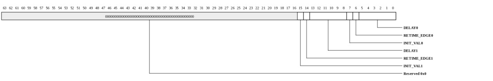
| Bits | Name | Type | Reset | Description
| 15 | INIT_VAL1 | RW | 0 | Controls initialization value of the read pointer in the DLL slave domain. This value is a function of the DELAY1 value. 14 | RETIME_EDGE1 | RW | 1 | Controls launch edge for retiming signals from DCLK domain to the DLL slave domain. This value is a function of the DELAY1 value. 13:8 | DELAY1 | RW | 18h | Controls DLL slave1 delay setting for data launch of point-to-point control signals. Valid values are 0x0 to 0x40. Nominal value should be (0x20 - MIN_DELAY). The MIN_DELAY value is bounded from 40-50 degrees (which corresponds a setting of approximately 0x7 to 0x9). 7 | INIT_VAL0 | RW | 0 | Controls initialization value of the read pointer in the DLL slave domain. This value is a function of the DELAY0 value. 6 | RETIME_EDGE0 | RW | 1 | Controls launch edge for retiming signals from DCLK domain to the DLL slave domain. This value is a function of the DELAY0 value. 5:0 | DELAY0 | RW | 18h | Controls DLL slave0 delay setting for data launch of multi-point control signals. Valid values are 0x0 to 0x40. Nominal value should be (0x20 - MIN_DELAY). The MIN_DELAY value is bounded from 40-50 degrees (which corresponds a setting of approximately 0x7 to 0x9). |
|---|
DDR3 ACC FORCE LP_DRIVE Control (MSH_DDR3_ACC_FORCE_LP_DRIVE: 0x0320)
DDR3 ACC FORCE LP_DRIVE ControlThis register is protected at level 1
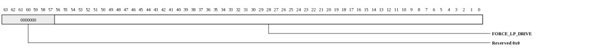
| Bits | Name | Type | Reset | Description
| 56:0 | FORCE_LP_DRIVE | RW | 0 | Controls whether a pin should be put in a low power disabled mode. To save power, only enable the bits that will be used. The unused bits are application dependent, for example, some high order bits of CS_N, ODT, CKE and A.
|
|---|
DDR3 CK PAD Control (MSH_DDR3_CK_PAD_CONTROL: 0x0328)
DDR3 CK PAD ControlThis register is protected at level 1
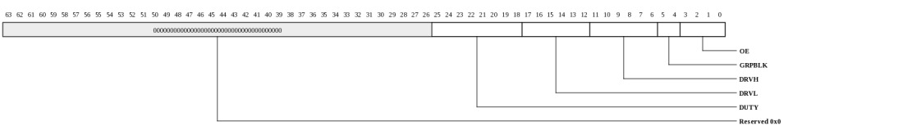
| Bits | Name | Type | Reset | Description
| 25:18 | DUTY | RW | 0 | Adjusts duty cycle of outgoing CK (prior to pads). Valid values are shown in the following table. 0x00: no adjustment 0x01: increase hi-pulse 1-step 0x05: increase hi-pulse 2-steps 0x15: increase hi-pulse 3-steps 0x55: increase hi-pulse 4-steps 0x02: increase lo-pulse 1-step 0x0a: increase lo-pulse 2-steps 0x2a: increase lo-pulse 3-steps 0xaa: increase lo-pulse 4-steps 17:12 | DRVL | RW | 3fh | Controls clock driver drive-low strength. Valid values are 0x0 to 0x3f. 11:6 | DRVH | RW | 3fh | Controls clock driver drive-high strength. Valid values are 0x0 to 0x3f. 5:4 | GRPBLK | RW | 3 | Controls clock driver block power-up/down for all 4 clock drivers. There are 2 blocks, block0 and block1. A value of 0x0 powers off both driver blocks for all 4 clock drivers. A value of 0x3 powers up block0 and block1 for all 4 clock drivers. 3:0 | OE | RW | 15 | Controls clock pad output driver enable. A value of 1 is driver enable, 0 is disable. There are 4 clock output pads. Valid values are 0x1 (driver 0 enable) to 0xf (all drivers enable). |
|---|
DDR3 ACC PAD Control (MSH_DDR3_ACC_PAD_CONTROL: 0x0330)
DDR3 ACC PAD ControlThis register is protected at level 1

| Bits | Name | Type | Reset | Description
| 25:20 | TL | RW | 3fh | Controls pad termination-low value. Valid values are 0x0 to 0x3f. 19:14 | TH | RW | 3fh | Controls pad termination-high value. Valid values are 0x0 to 0x3f. 13:8 | DRVL | RW | 3fh | Controls pad driver drive-low strength. Valid values are 0x0 to 0x3f. 7:2 | DRVH | RW | 3fh | Controls pad driver drive-high strength. Valid values are 0x0 to 0x3f. 1:0 | GRPBLK | RW | 3 | Controls pad driver block power-up/down for all address/command/control pads. There are 2 blocks, block0 and block1. A value of 0x0 powers off both driver blocks. A value of 0x3 powers up block0 and block1 for all drivers. |
|---|
DDR3 DATA0 PAD Control (MSH_DDR3_DATA0_PAD_CONTROL: 0x0338)
DDR3 DATA0 PAD ControlThis register is protected at level 1
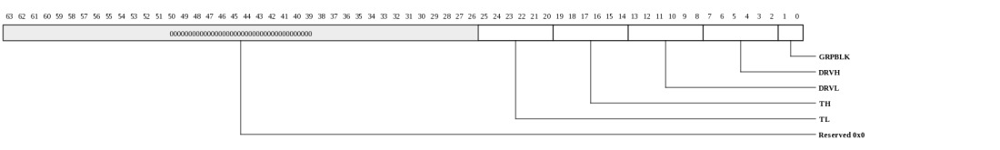
| Bits | Name | Type | Reset | Description
| 25:20 | TL | RW | 3fh | Controls pad termination-low value. Valid values are 0x0 to 0x3f. 19:14 | TH | RW | 3fh | Controls pad termination-high value. Valid values are 0x0 to 0x3f. 13:8 | DRVL | RW | 3fh | Controls pad drive-low strength. Valid values are 0x0 to 0x3f. 7:2 | DRVH | RW | 3fh | Controls pad drive-high strength. Valid values are 0x0 to 0x3f. 1:0 | GRPBLK | RW | 3 | Controls pad driver block power-up/down for pads in data0 slice. There are 2 blocks, block0 and block1. A value of 0x0 powers off both driver blocks. A value of 0x3 powers up block0 and block1 for all drivers. |
|---|
DDR3 DATA1 PAD Control (MSH_DDR3_DATA1_PAD_CONTROL: 0x0340)
DDR3 DATA1 PAD ControlThis register is protected at level 1

| Bits | Name | Type | Reset | Description
| 25:20 | TL | RW | 3fh | Controls pad termination-low value. Valid values are 0x0 to 0x3f. 19:14 | TH | RW | 3fh | Controls pad termination-high value. Valid values are 0x0 to 0x3f. 13:8 | DRVL | RW | 3fh | Controls pad drive-low strength. Valid values are 0x0 to 0x3f. 7:2 | DRVH | RW | 3fh | Controls pad drive-high strength. Valid values are 0x0 to 0x3f. 1:0 | GRPBLK | RW | 3 | Controls pad driver block power-up/down for pads in data1 slice. There are 2 blocks, block0 and block1. A value of 0x0 powers off both driver blocks. A value of 0x3 powers up block0 and block1 for all drivers. |
|---|
DDR3 DATA2 PAD Control (MSH_DDR3_DATA2_PAD_CONTROL: 0x0348)
DDR3 DATA2 PAD ControlThis register is protected at level 1

| Bits | Name | Type | Reset | Description
| 25:20 | TL | RW | 3fh | Controls pad termination-low value. Valid values are 0x0 to 0x3f. 19:14 | TH | RW | 3fh | Controls pad termination-high value. Valid values are 0x0 to 0x3f. 13:8 | DRVL | RW | 3fh | Controls pad drive-low strength. Valid values are 0x0 to 0x3f. 7:2 | DRVH | RW | 3fh | Controls pad drive-high strength. Valid values are 0x0 to 0x3f. 1:0 | GRPBLK | RW | 3 | Controls pad driver block power-up/down for pads in data2 slice. There are 2 blocks, block0 and block1. A value of 0x0 powers off both driver blocks. A value of 0x3 powers up block0 and block1 for all drivers. |
|---|
DDR3 DATA3 PAD Control (MSH_DDR3_DATA3_PAD_CONTROL: 0x0350)
DDR3 DATA3 PAD ControlThis register is protected at level 1

| Bits | Name | Type | Reset | Description
| 25:20 | TL | RW | 3fh | Controls pad termination-low value. Valid values are 0x0 to 0x3f. 19:14 | TH | RW | 3fh | Controls pad termination-high value. Valid values are 0x0 to 0x3f. 13:8 | DRVL | RW | 3fh | Controls pad drive-low strength. Valid values are 0x0 to 0x3f. 7:2 | DRVH | RW | 3fh | Controls pad drive-high strength. Valid values are 0x0 to 0x3f. 1:0 | GRPBLK | RW | 3 | Controls pad driver block power-up/down for pads in data3 slice. There are 2 blocks, block0 and block1. A value of 0x0 powers off both driver blocks. A value of 0x3 powers up block0 and block1 for all drivers. |
|---|
DDR3 DATA4 PAD Control (MSH_DDR3_DATA4_PAD_CONTROL: 0x0358)
DDR3 DATA4 PAD ControlThis register is protected at level 1

| Bits | Name | Type | Reset | Description
| 25:20 | TL | RW | 3fh | Controls pad termination-low value. Valid values are 0x0 to 0x3f. 19:14 | TH | RW | 3fh | Controls pad termination-high value. Valid values are 0x0 to 0x3f. 13:8 | DRVL | RW | 3fh | Controls pad drive-low strength. Valid values are 0x0 to 0x3f. 7:2 | DRVH | RW | 3fh | Controls pad drive-high strength. Valid values are 0x0 to 0x3f. 1:0 | GRPBLK | RW | 3 | Controls pad driver block power-up/down for pads in data4 slice. There are 2 blocks, block0 and block1. A value of 0x0 powers off both driver blocks. A value of 0x3 powers up block0 and block1 for all drivers. |
|---|
DDR3 DATA5 PAD Control (MSH_DDR3_DATA5_PAD_CONTROL: 0x0360)
DDR3 DATA5 PAD ControlThis register is protected at level 1

| Bits | Name | Type | Reset | Description
| 25:20 | TL | RW | 3fh | Controls pad termination-low value. Valid values are 0x0 to 0x3f. 19:14 | TH | RW | 3fh | Controls pad termination-high value. Valid values are 0x0 to 0x3f. 13:8 | DRVL | RW | 3fh | Controls pad drive-low strength. Valid values are 0x0 to 0x3f. 7:2 | DRVH | RW | 3fh | Controls pad drive-high strength. Valid values are 0x0 to 0x3f. 1:0 | GRPBLK | RW | 3 | Controls pad driver block power-up/down for pads in data5 slice. There are 2 blocks, block0 and block1. A value of 0x0 powers off both driver blocks. A value of 0x3 powers up block0 and block1 for all drivers. |
|---|
DDR3 DATA6 PAD Control (MSH_DDR3_DATA6_PAD_CONTROL: 0x0368)
DDR3 DATA6 PAD ControlThis register is protected at level 1

| Bits | Name | Type | Reset | Description
| 25:20 | TL | RW | 3fh | Controls pad termination-low value. Valid values are 0x0 to 0x3f. 19:14 | TH | RW | 3fh | Controls pad termination-high value. Valid values are 0x0 to 0x3f. 13:8 | DRVL | RW | 3fh | Controls pad drive-low strength. Valid values are 0x0 to 0x3f. 7:2 | DRVH | RW | 3fh | Controls pad drive-high strength. Valid values are 0x0 to 0x3f. 1:0 | GRPBLK | RW | 3 | Controls pad driver block power-up/down for pads in data6 slice. There are 2 blocks, block0 and block1. A value of 0x0 powers off both driver blocks. A value of 0x3 powers up block0 and block1 for all drivers. |
|---|
DDR3 DATA7 PAD Control (MSH_DDR3_DATA7_PAD_CONTROL: 0x0370)
DDR3 DATA7 PAD ControlThis register is protected at level 1

| Bits | Name | Type | Reset | Description
| 25:20 | TL | RW | 3fh | Controls pad termination-low value. Valid values are 0x0 to 0x3f. 19:14 | TH | RW | 3fh | Controls pad termination-high value. Valid values are 0x0 to 0x3f. 13:8 | DRVL | RW | 3fh | Controls pad drive-low strength. Valid values are 0x0 to 0x3f. 7:2 | DRVH | RW | 3fh | Controls pad drive-high strength. Valid values are 0x0 to 0x3f. 1:0 | GRPBLK | RW | 3 | Controls pad driver block power-up/down for pads in data7 slice. There are 2 blocks, block0 and block1. A value of 0x0 powers off both driver blocks. A value of 0x3 powers up block0 and block1 for all drivers. |
|---|
DDR3 DATA8 PAD Control (MSH_DDR3_DATA8_PAD_CONTROL: 0x0378)
DDR3 DATA8 PAD ControlThis register is protected at level 1

| Bits | Name | Type | Reset | Description
| 25:20 | TL | RW | 3fh | Controls pad termination-low value. Valid values are 0x0 to 0x3f. 19:14 | TH | RW | 3fh | Controls pad termination-high value. Valid values are 0x0 to 0x3f. 13:8 | DRVL | RW | 3fh | Controls pad drive-low strength. Valid values are 0x0 to 0x3f. 7:2 | DRVH | RW | 3fh | Controls pad drive-high strength. Valid values are 0x0 to 0x3f. 1:0 | GRPBLK | RW | 3 | Controls pad driver block power-up/down for pads in data8 slice. There are 2 blocks, block0 and block1. A value of 0x0 powers off both driver blocks. A value of 0x3 powers up block0 and block1 for all drivers. |
|---|
DDR3 PHY Delay (MSH_DDR3_PHY_DELAY: 0x03f0)
DDR3 PHY DelayThis register is protected at level 1
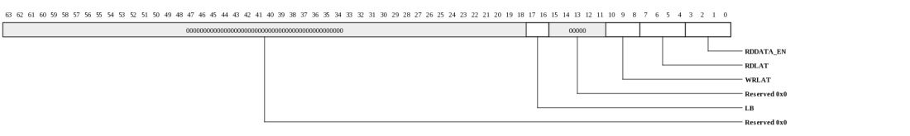
| Bits | Name | Type | Reset | Description
| 17:16 | LB | RW | 0 | Valid only during the MPHY loopback test mode. It specifies the delay from the loopback launch to loopback capture. | 0: earliest delay 1: one more cycle delay 2: two more cycles delay 3: three more cycles delay 10:8 | WRLAT | RW | 2 | The number of clocks from assertion of write command to dfi_wrdata_en asserts. Valid values are 0 to 7, inclusive. Typically, there is no need to change this setting. | 7:4 | RDLAT | RW | 6 | The number of clocks from assertion of dfi_rddata_en to | dfi_rddata_valid asserts (independent of CL). NOTE that zero is an invalid value. RDLAT may need to be updated to match the board trace delay. 3:0 | RDDATA_EN | RW | 7 | The number of clocks from assertion of read command to dfi_rddata_en asserts. Valid values are 4 to 10, inclusive. | Typically, there is no need to change this setting. |
|---|
DDR3 DQS TX Control (MSH_DDR3_DQS_TX_CONTROL: 0x0400)
DDR3 DQS TX ControlThis register is protected at level 1
| Bits | Name | Type | Reset | Description
| 3:2 | POSTAMBLE | RW | 1 | This register is no longer used. 1:0 | PREAMBLE | RW | 0 | The function of this register and field has changed and is now not associated with the name. This field now controls the rx termination timing. A value of 0x0 selects termination enable 0.5-cycle prior to gate enable. 0x1 selects termination enable 1.0-cycles prior to gate enable. 0x2 selects 1.5-cycle prior to gate enable. 0x3 is reserved. Note this timing is relative to the gate_cycle timing. If the gate_phase or gate_fine delay timing is adjusted, the above relationship will vary with an offset defined by the gate_phase and/or gate_fine delay codes. |
|---|
DDR3 DATA0 TX Control (MSH_DDR3_DATA0_TX_CONTROL: 0x0408)
DDR3 DATA0 TX CONTROL ControlThis register is protected at level 1
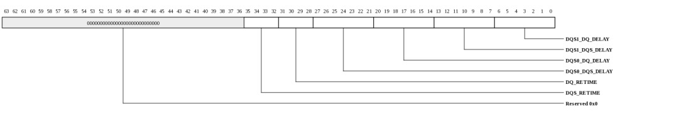
| Bits | Name | Type | Reset | Description
| 35:32 | DQS_RETIME | RW | 0 | Controls launch edge for retiming signals from D2XCLK domain to the DLL domain. This value is a function of the DQS_DELAY value. The field is a 4 bit value where: Bits [3:2] control DQS1 retiming. Bits [1:0] control DQS0 retiming. 31:28 | DQ_RETIME | RW | 0 | Controls launch edge for retiming signals from D2XCLK domain to the DLL domain. This value is a function of the DQ_DELAY value. The field is a 4 bit value where: Bits [3:2] control DQS1 retiming. Bits [1:0] control DQS0 retiming. 27:21 | DQS0_DQS_DELAY | RW | 15 | Controls DQS0 DLL slave delay setting for strobe launch. Valid values are 0x0 to 0x40. Nominal value should be 0xF. 20:14 | DQS0_DQ_DELAY | RW | 0 | Controls DQS0 DLL slave delay setting for data launch. Valid values are 0x0 to 0x40. Nominal value should be 0. 13:7 | DQS1_DQS_DELAY | RW | 15 | Controls DQS1 DLL slave delay setting for strobe launch. Valid values are 0x0 to 0x40. Nominal value should be 0xF. 6:0 | DQS1_DQ_DELAY | RW | 0 | Controls DQS1 DLL slave delay setting for data launch. Valid values are 0x0 to 0x40. Nominal value should be 0. |
|---|
DDR3 DATA1 TX Control (MSH_DDR3_DATA1_TX_CONTROL: 0x0410)
DDR3 DATA1 TX CONTROL ControlThis register is protected at level 1

| Bits | Name | Type | Reset | Description
| 35:32 | DQS_RETIME | RW | 0 | Controls launch edge for retiming signals from D2XCLK domain to the DLL domain. This value is a function of the DQS_DELAY value. The field is a 4 bit value where: Bits [3:2] control DQS1 retiming. Bits [1:0] control DQS0 retiming. 31:28 | DQ_RETIME | RW | 0 | Controls launch edge for retiming signals from D2XCLK domain to the DLL domain. This value is a function of the DQ_DELAY value. The field is a 4 bit value where: Bits [3:2] control DQS1 retiming. Bits [1:0] control DQS0 retiming. 27:21 | DQS0_DQS_DELAY | RW | 15 | Controls DQS0 DLL slave delay setting for strobe launch. Valid values are 0x0 to 0x40. Nominal value should be 0xF. 20:14 | DQS0_DQ_DELAY | RW | 0 | Controls DQS0 DLL slave delay setting for data launch. Valid values are 0x0 to 0x40. Nominal value should be 0. 13:7 | DQS1_DQS_DELAY | RW | 15 | Controls DQS1 DLL slave delay setting for strobe launch. Valid values are 0x0 to 0x40. Nominal value should be 0xF. 6:0 | DQS1_DQ_DELAY | RW | 0 | Controls DQS1 DLL slave delay setting for data launch. Valid values are 0x0 to 0x40. Nominal value should be 0. |
|---|
DDR3 DATA2 TX Control (MSH_DDR3_DATA2_TX_CONTROL: 0x0418)
DDR3 DATA2 TX CONTROL ControlThis register is protected at level 1

| Bits | Name | Type | Reset | Description
| 35:32 | DQS_RETIME | RW | 0 | Controls launch edge for retiming signals from D2XCLK domain to the DLL domain. This value is a function of the DQS_DELAY value. The field is a 4 bit value where: Bits [3:2] control DQS1 retiming. Bits [1:0] control DQS0 retiming. 31:28 | DQ_RETIME | RW | 0 | Controls launch edge for retiming signals from D2XCLK domain to the DLL domain. This value is a function of the DQ_DELAY value. The field is a 4 bit value where: Bits [3:2] control DQS1 retiming. Bits [1:0] control DQS0 retiming. 27:21 | DQS0_DQS_DELAY | RW | 15 | Controls DQS0 DLL slave delay setting for strobe launch. Valid values are 0x0 to 0x40. Nominal value should be 0xF. 20:14 | DQS0_DQ_DELAY | RW | 0 | Controls DQS0 DLL slave delay setting for data launch. Valid values are 0x0 to 0x40. Nominal value should be 0. 13:7 | DQS1_DQS_DELAY | RW | 15 | Controls DQS1 DLL slave delay setting for strobe launch. Valid values are 0x0 to 0x40. Nominal value should be 0xF. 6:0 | DQS1_DQ_DELAY | RW | 0 | Controls DQS1 DLL slave delay setting for data launch. Valid values are 0x0 to 0x40. Nominal value should be 0. |
|---|
DDR3 DATA3 TX Control (MSH_DDR3_DATA3_TX_CONTROL: 0x0420)
DDR3 DATA3 TX CONTROL ControlThis register is protected at level 1

| Bits | Name | Type | Reset | Description
| 35:32 | DQS_RETIME | RW | 0 | Controls launch edge for retiming signals from D2XCLK domain to the DLL domain. This value is a function of the DQS_DELAY value. The field is a 4 bit value where: Bits [3:2] control DQS1 retiming. Bits [1:0] control DQS0 retiming. 31:28 | DQ_RETIME | RW | 0 | Controls launch edge for retiming signals from D2XCLK domain to the DLL domain. This value is a function of the DQ_DELAY value. The field is a 4 bit value where: Bits [3:2] control DQS1 retiming. Bits [1:0] control DQS0 retiming. 27:21 | DQS0_DQS_DELAY | RW | 15 | Controls DQS0 DLL slave delay setting for strobe launch. Valid values are 0x0 to 0x40. Nominal value should be 0xF. 20:14 | DQS0_DQ_DELAY | RW | 0 | Controls DQS0 DLL slave delay setting for data launch. Valid values are 0x0 to 0x40. Nominal value should be 0. 13:7 | DQS1_DQS_DELAY | RW | 15 | Controls DQS1 DLL slave delay setting for strobe launch. Valid values are 0x0 to 0x40. Nominal value should be 0xF. 6:0 | DQS1_DQ_DELAY | RW | 0 | Controls DQS1 DLL slave delay setting for data launch. Valid values are 0x0 to 0x40. Nominal value should be 0. |
|---|
DDR3 DATA4 TX Control (MSH_DDR3_DATA4_TX_CONTROL: 0x0428)
DDR3 DATA4 TX CONTROL ControlThis register is protected at level 1

| Bits | Name | Type | Reset | Description
| 35:32 | DQS_RETIME | RW | 0 | Controls launch edge for retiming signals from D2XCLK domain to the DLL domain. This value is a function of the DQS_DELAY value. The field is a 4 bit value where: Bits [3:2] control DQS1 retiming. Bits [1:0] control DQS0 retiming. 31:28 | DQ_RETIME | RW | 0 | Controls launch edge for retiming signals from D2XCLK domain to the DLL domain. This value is a function of the DQ_DELAY value. The field is a 4 bit value where: Bits [3:2] control DQS1 retiming. Bits [1:0] control DQS0 retiming. 27:21 | DQS0_DQS_DELAY | RW | 15 | Controls DQS0 DLL slave delay setting for strobe launch. Valid values are 0x0 to 0x40. Nominal value should be 0xF. 20:14 | DQS0_DQ_DELAY | RW | 0 | Controls DQS0 DLL slave delay setting for data launch. Valid values are 0x0 to 0x40. Nominal value should be 0. 13:7 | DQS1_DQS_DELAY | RW | 15 | Controls DQS1 DLL slave delay setting for strobe launch. Valid values are 0x0 to 0x40. Nominal value should be 0xF. 6:0 | DQS1_DQ_DELAY | RW | 0 | Controls DQS1 DLL slave delay setting for data launch. Valid values are 0x0 to 0x40. Nominal value should be 0. |
|---|
DDR3 DATA5 TX Control (MSH_DDR3_DATA5_TX_CONTROL: 0x0430)
DDR3 DATA5 TX CONTROL ControlThis register is protected at level 1

| Bits | Name | Type | Reset | Description
| 35:32 | DQS_RETIME | RW | 0 | Controls launch edge for retiming signals from D2XCLK domain to the DLL domain. This value is a function of the DQS_DELAY value. The field is a 4 bit value where: Bits [3:2] control DQS1 retiming. Bits [1:0] control DQS0 retiming. 31:28 | DQ_RETIME | RW | 0 | Controls launch edge for retiming signals from D2XCLK domain to the DLL domain. This value is a function of the DQ_DELAY value. The field is a 4 bit value where: Bits [3:2] control DQS1 retiming. Bits [1:0] control DQS0 retiming. 27:21 | DQS0_DQS_DELAY | RW | 15 | Controls DQS0 DLL slave delay setting for strobe launch. Valid values are 0x0 to 0x40. Nominal value should be 0xF. 20:14 | DQS0_DQ_DELAY | RW | 0 | Controls DQS0 DLL slave delay setting for data launch. Valid values are 0x0 to 0x40. Nominal value should be 0. 13:7 | DQS1_DQS_DELAY | RW | 15 | Controls DQS1 DLL slave delay setting for strobe launch. Valid values are 0x0 to 0x40. Nominal value should be 0xF. 6:0 | DQS1_DQ_DELAY | RW | 0 | Controls DQS1 DLL slave delay setting for data launch. Valid values are 0x0 to 0x40. Nominal value should be 0. |
|---|
DDR3 DATA6 TX Control (MSH_DDR3_DATA6_TX_CONTROL: 0x0438)
DDR3 DATA6 TX CONTROL ControlThis register is protected at level 1

| Bits | Name | Type | Reset | Description
| 35:32 | DQS_RETIME | RW | 0 | Controls launch edge for retiming signals from D2XCLK domain to the DLL domain. This value is a function of the DQS_DELAY value. The field is a 4 bit value where: Bits [3:2] control DQS1 retiming. Bits [1:0] control DQS0 retiming. 31:28 | DQ_RETIME | RW | 0 | Controls launch edge for retiming signals from D2XCLK domain to the DLL domain. This value is a function of the DQ_DELAY value. The field is a 4 bit value where: Bits [3:2] control DQS1 retiming. Bits [1:0] control DQS0 retiming. 27:21 | DQS0_DQS_DELAY | RW | 15 | Controls DQS0 DLL slave delay setting for strobe launch. Valid values are 0x0 to 0x40. Nominal value should be 0xF. 20:14 | DQS0_DQ_DELAY | RW | 0 | Controls DQS0 DLL slave delay setting for data launch. Valid values are 0x0 to 0x40. Nominal value should be 0. 13:7 | DQS1_DQS_DELAY | RW | 15 | Controls DQS1 DLL slave delay setting for strobe launch. Valid values are 0x0 to 0x40. Nominal value should be 0xF. 6:0 | DQS1_DQ_DELAY | RW | 0 | Controls DQS1 DLL slave delay setting for data launch. Valid values are 0x0 to 0x40. Nominal value should be 0. |
|---|
DDR3 DATA7 TX Control (MSH_DDR3_DATA7_TX_CONTROL: 0x0440)
DDR3 DATA7 TX CONTROL ControlThis register is protected at level 1

| Bits | Name | Type | Reset | Description
| 35:32 | DQS_RETIME | RW | 0 | Controls launch edge for retiming signals from D2XCLK domain to the DLL domain. This value is a function of the DQS_DELAY value. The field is a 4 bit value where: Bits [3:2] control DQS1 retiming. Bits [1:0] control DQS0 retiming. 31:28 | DQ_RETIME | RW | 0 | Controls launch edge for retiming signals from D2XCLK domain to the DLL domain. This value is a function of the DQ_DELAY value. The field is a 4 bit value where: Bits [3:2] control DQS1 retiming. Bits [1:0] control DQS0 retiming. 27:21 | DQS0_DQS_DELAY | RW | 15 | Controls DQS0 DLL slave delay setting for strobe launch. Valid values are 0x0 to 0x40. Nominal value should be 0xF. 20:14 | DQS0_DQ_DELAY | RW | 0 | Controls DQS0 DLL slave delay setting for data launch. Valid values are 0x0 to 0x40. Nominal value should be 0. 13:7 | DQS1_DQS_DELAY | RW | 15 | Controls DQS1 DLL slave delay setting for strobe launch. Valid values are 0x0 to 0x40. Nominal value should be 0xF. 6:0 | DQS1_DQ_DELAY | RW | 0 | Controls DQS1 DLL slave delay setting for data launch. Valid values are 0x0 to 0x40. Nominal value should be 0. |
|---|
DDR3 DATA8 TX Control (MSH_DDR3_DATA8_TX_CONTROL: 0x0448)
DDR3 DATA8 TX CONTROL ControlThis register is protected at level 1

| Bits | Name | Type | Reset | Description
| 35:32 | DQS_RETIME | RW | 0 | Controls launch edge for retiming signals from D2XCLK domain to the DLL domain. This value is a function of the DQS_DELAY value. The field is a 4 bit value where: Bits [3:2] control DQS1 retiming. Bits [1:0] control DQS0 retiming. 31:28 | DQ_RETIME | RW | 0 | Controls launch edge for retiming signals from D2XCLK domain to the DLL domain. This value is a function of the DQ_DELAY value. The field is a 4 bit value where: Bits [3:2] control DQS1 retiming. Bits [1:0] control DQS0 retiming. 27:21 | DQS0_DQS_DELAY | RW | 15 | Controls DQS0 DLL slave delay setting for strobe launch. Valid values are 0x0 to 0x40. Nominal value should be 0xF. 20:14 | DQS0_DQ_DELAY | RW | 0 | Controls DQS0 DLL slave delay setting for data launch. Valid values are 0x0 to 0x40. Nominal value should be 0. 13:7 | DQS1_DQS_DELAY | RW | 15 | Controls DQS1 DLL slave delay setting for strobe launch. Valid values are 0x0 to 0x40. Nominal value should be 0xF. 6:0 | DQS1_DQ_DELAY | RW | 0 | Controls DQS1 DLL slave delay setting for data launch. Valid values are 0x0 to 0x40. Nominal value should be 0. |
|---|
DDR3 DATA0 TX Bit Control (MSH_DDR3_DATA0_TX_BIT_CONTROL: 0x0450)
DDR3 DATA0 TX BIT CONTROL ControlThis register is protected at level 1

| Bits | Name | Type | Reset | Description
| 23:0 | BIT_DELAY | RW | 0 | Controls optional additional transmit delay for each signal of the slice. There is a 3 bit value per signal, and 8 values per slice, for a 16 bit field. For each signal, a value of 0x0 means no additional delay. A value of 0x1 to 0x3 means 1 to 3 steps of additional delay. |
|---|
DDR3 DATA1 TX Bit Control (MSH_DDR3_DATA1_TX_BIT_CONTROL: 0x0458)
DDR3 DATA1 TX BIT CONTROL ControlThis register is protected at level 1

| Bits | Name | Type | Reset | Description
| 23:0 | BIT_DELAY | RW | 0 | Controls optional additional transmit delay for each signal of the slice. There is a 3 bit value per signal, and 8 values per slice, for a 16 bit field. For each signal, a value of 0x0 means no additional delay. A value of 0x1 to 0x3 means 1 to 3 steps of additional delay. |
|---|
DDR3 DATA2 TX Bit Control (MSH_DDR3_DATA2_TX_BIT_CONTROL: 0x0460)
DDR3 DATA2 TX BIT CONTROL ControlThis register is protected at level 1

| Bits | Name | Type | Reset | Description
| 23:0 | BIT_DELAY | RW | 0 | Controls optional additional transmit delay for each signal of the slice. There is a 3 bit value per signal, and 8 values per slice, for a 16 bit field. For each signal, a value of 0x0 means no additional delay. A value of 0x1 to 0x3 means 1 to 3 steps of additional delay. |
|---|
DDR3 DATA3 TX Bit Control (MSH_DDR3_DATA3_TX_BIT_CONTROL: 0x0468)
DDR3 DATA3 TX BIT CONTROL ControlThis register is protected at level 1
| Bits | Name | Type | Reset | Description
| 23:0 | BIT_DELAY | RW | 0 | Controls optional additional transmit delay for each signal of the slice. There is a 3 bit value per signal, and 8 values per slice, for a 16 bit field. For each signal, a value of 0x0 means no additional delay. A value of 0x1 to 0x3 means 1 to 3 steps of additional delay. |
|---|
DDR3 DATA4 TX Bit Control (MSH_DDR3_DATA4_TX_BIT_CONTROL: 0x0470)
DDR3 DATA4 TX BIT CONTROL ControlThis register is protected at level 1

| Bits | Name | Type | Reset | Description
| 23:0 | BIT_DELAY | RW | 0 | Controls optional additional transmit delay for each signal of the slice. There is a 3 bit value per signal, and 8 values per slice, for a 16 bit field. For each signal, a value of 0x0 means no additional delay. A value of 0x1 to 0x3 means 1 to 3 steps of additional delay. |
|---|
DDR3 DATA5 TX Bit Control (MSH_DDR3_DATA5_TX_BIT_CONTROL: 0x0478)
DDR3 DATA5 TX BIT CONTROL ControlThis register is protected at level 1

| Bits | Name | Type | Reset | Description
| 23:0 | BIT_DELAY | RW | 0 | Controls optional additional transmit delay for each signal of the slice. There is a 3 bit value per signal, and 8 values per slice, for a 16 bit field. For each signal, a value of 0x0 means no additional delay. A value of 0x1 to 0x3 means 1 to 3 steps of additional delay. |
|---|
DDR3 DATA6 TX Bit Control (MSH_DDR3_DATA6_TX_BIT_CONTROL: 0x0480)
DDR3 DATA6 TX BIT CONTROL ControlThis register is protected at level 1

| Bits | Name | Type | Reset | Description
| 23:0 | BIT_DELAY | RW | 0 | Controls optional additional transmit delay for each signal of the slice. There is a 3 bit value per signal, and 8 values per slice, for a 16 bit field. For each signal, a value of 0x0 means no additional delay. A value of 0x1 to 0x3 means 1 to 3 steps of additional delay. |
|---|
DDR3 DATA7 TX Bit Control (MSH_DDR3_DATA7_TX_BIT_CONTROL: 0x0488)
DDR3 DATA7 TX BIT CONTROL ControlThis register is protected at level 1

| Bits | Name | Type | Reset | Description
| 23:0 | BIT_DELAY | RW | 0 | Controls optional additional transmit delay for each signal of the slice. There is a 3 bit value per signal, and 8 values per slice, for a 16 bit field. For each signal, a value of 0x0 means no additional delay. A value of 0x1 to 0x3 means 1 to 3 steps of additional delay. |
|---|
DDR3 DATA8 TX Bit Control (MSH_DDR3_DATA8_TX_BIT_CONTROL: 0x0490)
DDR3 DATA8 TX BIT CONTROL ControlThis register is protected at level 1

| Bits | Name | Type | Reset | Description
| 23:0 | BIT_DELAY | RW | 0 | Controls optional additional transmit delay for each signal of the slice. There is a 3 bit value per signal, and 8 values per slice, for a 16 bit field. For each signal, a value of 0x0 means no additional delay. A value of 0x1 to 0x3 means 1 to 3 steps of additional delay. |
|---|
DDR3 DATA0 RX Control (MSH_DDR3_DATA0_RX_CONTROL: 0x04a0)
DDR3 DATA0 RX ControlThis register is protected at level 1

| Bits | Name | Type | Reset | Description
| 47:24 | BIT_DELAY | RW | 0 | Controls optional additional receive delay for each signal of the slice. There is a 3 bit value per signal, and 8 values per slice, for a 16 bit field. For each signal, a value of 0x0 means no additional delay. A value of 0x1 to 0x3 means 1 to 3 steps of additional delay. 23:18 | DQS0_DQSN_DELAY | RW | 8 | Controls DQS0 DLL slave delay setting for falling-edge data receive. Valid values are 0x0 to 0x40. Nominal value should be (0xF - MIN_DELAY). The MIN_DELAY value is bounded from 40-50 degrees (which corresponds a setting of approximately 0x7 to 0x9). 17:12 | DQS0_DQSP_DELAY | RW | 8 | Controls DQS0 DLL slave delay setting for rising-edge data receive. Valid values are 0x0 to 0x40. Nominal value should be (0xF - MIN_DELAY). The MIN_DELAY value is bounded from 40-50 degrees (which corresponds a setting of approximately 0x7 to 0x9). 11:6 | DQS1_DQSN_DELAY | RW | 8 | Controls DQS1 DLL slave delay setting for falling-edge data receive. Valid values are 0x0 to 0x40. Nominal value should be (0xF - MIN_DELAY). The MIN_DELAY value is bounded from 40-50 degrees (which corresponds a setting of approximately 0x7 to 0x9). 5:0 | DQS1_DQSP_DELAY | RW | 8 | Controls DQS1 DLL slave delay setting for rising-edge data receive. Valid values are 0x0 to 0x40. Nominal value should be (0xF - MIN_DELAY). The MIN_DELAY value is bounded from 40-50 degrees (which corresponds a setting of approximately 0x7 to 0x9). |
|---|
DDR3 DATA1 RX Control (MSH_DDR3_DATA1_RX_CONTROL: 0x04a8)
DDR3 DATA1 RX ControlThis register is protected at level 1

| Bits | Name | Type | Reset | Description
| 47:24 | BIT_DELAY | RW | 0 | Controls optional additional receive delay for each signal of the slice. There is a 3 bit value per signal, and 8 values per slice, for a 16 bit field. For each signal, a value of 0x0 means no additional delay. A value of 0x1 to 0x3 means 1 to 3 steps of additional delay. 23:18 | DQS0_DQSN_DELAY | RW | 8 | Controls DQS0 DLL slave delay setting for falling-edge data receive. Valid values are 0x0 to 0x40. Nominal value should be (0xF - MIN_DELAY). The MIN_DELAY value is bounded from 40-50 degrees (which corresponds a setting of approximately 0x7 to 0x9). 17:12 | DQS0_DQSP_DELAY | RW | 8 | Controls DQS0 DLL slave delay setting for rising-edge data receive. Valid values are 0x0 to 0x40. Nominal value should be (0xF - MIN_DELAY). The MIN_DELAY value is bounded from 40-50 degrees (which corresponds a setting of approximately 0x7 to 0x9). 11:6 | DQS1_DQSN_DELAY | RW | 8 | Controls DQS1 DLL slave delay setting for falling-edge data receive. Valid values are 0x0 to 0x40. Nominal value should be (0xF - MIN_DELAY). The MIN_DELAY value is bounded from 40-50 degrees (which corresponds a setting of approximately 0x7 to 0x9). 5:0 | DQS1_DQSP_DELAY | RW | 8 | Controls DQS1 DLL slave delay setting for rising-edge data receive. Valid values are 0x0 to 0x40. Nominal value should be (0xF - MIN_DELAY). The MIN_DELAY value is bounded from 40-50 degrees (which corresponds a setting of approximately 0x7 to 0x9). |
|---|
DDR3 DATA2 RX Control (MSH_DDR3_DATA2_RX_CONTROL: 0x04b0)
DDR3 DATA2 RX ControlThis register is protected at level 1

| Bits | Name | Type | Reset | Description
| 47:24 | BIT_DELAY | RW | 0 | Controls optional additional receive delay for each signal of the slice. There is a 3 bit value per signal, and 8 values per slice, for a 16 bit field. For each signal, a value of 0x0 means no additional delay. A value of 0x1 to 0x3 means 1 to 3 steps of additional delay. 23:18 | DQS0_DQSN_DELAY | RW | 8 | Controls DQS0 DLL slave delay setting for falling-edge data receive. Valid values are 0x0 to 0x40. Nominal value should be (0xF - MIN_DELAY). The MIN_DELAY value is bounded from 40-50 degrees (which corresponds a setting of approximately 0x7 to 0x9). 17:12 | DQS0_DQSP_DELAY | RW | 8 | Controls DQS0 DLL slave delay setting for rising-edge data receive. Valid values are 0x0 to 0x40. Nominal value should be (0xF - MIN_DELAY). The MIN_DELAY value is bounded from 40-50 degrees (which corresponds a setting of approximately 0x7 to 0x9). 11:6 | DQS1_DQSN_DELAY | RW | 8 | Controls DQS1 DLL slave delay setting for falling-edge data receive. Valid values are 0x0 to 0x40. Nominal value should be (0xF - MIN_DELAY). The MIN_DELAY value is bounded from 40-50 degrees (which corresponds a setting of approximately 0x7 to 0x9). 5:0 | DQS1_DQSP_DELAY | RW | 8 | Controls DQS1 DLL slave delay setting for rising-edge data receive. Valid values are 0x0 to 0x40. Nominal value should be (0xF - MIN_DELAY). The MIN_DELAY value is bounded from 40-50 degrees (which corresponds a setting of approximately 0x7 to 0x9). |
|---|
DDR3 DATA3 RX Control (MSH_DDR3_DATA3_RX_CONTROL: 0x04b8)
DDR3 DATA3 RX ControlThis register is protected at level 1

| Bits | Name | Type | Reset | Description
| 47:24 | BIT_DELAY | RW | 0 | Controls optional additional receive delay for each signal of the slice. There is a 3 bit value per signal, and 8 values per slice, for a 16 bit field. For each signal, a value of 0x0 means no additional delay. A value of 0x1 to 0x3 means 1 to 3 steps of additional delay. 23:18 | DQS0_DQSN_DELAY | RW | 8 | Controls DQS0 DLL slave delay setting for falling-edge data receive. Valid values are 0x0 to 0x40. Nominal value should be (0xF - MIN_DELAY). The MIN_DELAY value is bounded from 40-50 degrees (which corresponds a setting of approximately 0x7 to 0x9). 17:12 | DQS0_DQSP_DELAY | RW | 8 | Controls DQS0 DLL slave delay setting for rising-edge data receive. Valid values are 0x0 to 0x40. Nominal value should be (0xF - MIN_DELAY). The MIN_DELAY value is bounded from 40-50 degrees (which corresponds a setting of approximately 0x7 to 0x9). 11:6 | DQS1_DQSN_DELAY | RW | 8 | Controls DQS1 DLL slave delay setting for falling-edge data receive. Valid values are 0x0 to 0x40. Nominal value should be (0xF - MIN_DELAY). The MIN_DELAY value is bounded from 40-50 degrees (which corresponds a setting of approximately 0x7 to 0x9). 5:0 | DQS1_DQSP_DELAY | RW | 8 | Controls DQS1 DLL slave delay setting for rising-edge data receive. Valid values are 0x0 to 0x40. Nominal value should be (0xF - MIN_DELAY). The MIN_DELAY value is bounded from 40-50 degrees (which corresponds a setting of approximately 0x7 to 0x9). |
|---|
DDR3 DATA4 RX Control (MSH_DDR3_DATA4_RX_CONTROL: 0x04c0)
DDR3 DATA4 RX ControlThis register is protected at level 1

| Bits | Name | Type | Reset | Description
| 47:24 | BIT_DELAY | RW | 0 | Controls optional additional receive delay for each signal of the slice. There is a 3 bit value per signal, and 8 values per slice, for a 16 bit field. For each signal, a value of 0x0 means no additional delay. A value of 0x1 to 0x3 means 1 to 3 steps of additional delay. 23:18 | DQS0_DQSN_DELAY | RW | 8 | Controls DQS0 DLL slave delay setting for falling-edge data receive. Valid values are 0x0 to 0x40. Nominal value should be (0xF - MIN_DELAY). The MIN_DELAY value is bounded from 40-50 degrees (which corresponds a setting of approximately 0x7 to 0x9). 17:12 | DQS0_DQSP_DELAY | RW | 8 | Controls DQS0 DLL slave delay setting for rising-edge data receive. Valid values are 0x0 to 0x40. Nominal value should be (0xF - MIN_DELAY). The MIN_DELAY value is bounded from 40-50 degrees (which corresponds a setting of approximately 0x7 to 0x9). 11:6 | DQS1_DQSN_DELAY | RW | 8 | Controls DQS1 DLL slave delay setting for falling-edge data receive. Valid values are 0x0 to 0x40. Nominal value should be (0xF - MIN_DELAY). The MIN_DELAY value is bounded from 40-50 degrees (which corresponds a setting of approximately 0x7 to 0x9). 5:0 | DQS1_DQSP_DELAY | RW | 8 | Controls DQS1 DLL slave delay setting for rising-edge data receive. Valid values are 0x0 to 0x40. Nominal value should be (0xF - MIN_DELAY). The MIN_DELAY value is bounded from 40-50 degrees (which corresponds a setting of approximately 0x7 to 0x9). |
|---|
DDR3 DATA5 RX Control (MSH_DDR3_DATA5_RX_CONTROL: 0x04c8)
DDR3 DATA5 RX ControlThis register is protected at level 1
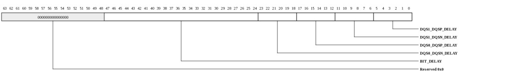
| Bits | Name | Type | Reset | Description
| 47:24 | BIT_DELAY | RW | 0 | Controls optional additional receive delay for each signal of the slice. There is a 3 bit value per signal, and 8 values per slice, for a 16 bit field. For each signal, a value of 0x0 means no additional delay. A value of 0x1 to 0x3 means 1 to 3 steps of additional delay. 23:18 | DQS0_DQSN_DELAY | RW | 8 | Controls DQS0 DLL slave delay setting for falling-edge data receive. Valid values are 0x0 to 0x40. Nominal value should be (0xF - MIN_DELAY). The MIN_DELAY value is bounded from 40-50 degrees (which corresponds a setting of approximately 0x7 to 0x9). 17:12 | DQS0_DQSP_DELAY | RW | 8 | Controls DQS0 DLL slave delay setting for rising-edge data receive. Valid values are 0x0 to 0x40. Nominal value should be (0xF - MIN_DELAY). The MIN_DELAY value is bounded from 40-50 degrees (which corresponds a setting of approximately 0x7 to 0x9). 11:6 | DQS1_DQSN_DELAY | RW | 8 | Controls DQS1 DLL slave delay setting for falling-edge data receive. Valid values are 0x0 to 0x40. Nominal value should be (0xF - MIN_DELAY). The MIN_DELAY value is bounded from 40-50 degrees (which corresponds a setting of approximately 0x7 to 0x9). 5:0 | DQS1_DQSP_DELAY | RW | 8 | Controls DQS1 DLL slave delay setting for rising-edge data receive. Valid values are 0x0 to 0x40. Nominal value should be (0xF - MIN_DELAY). The MIN_DELAY value is bounded from 40-50 degrees (which corresponds a setting of approximately 0x7 to 0x9). |
|---|
DDR3 DATA6 RX Control (MSH_DDR3_DATA6_RX_CONTROL: 0x04d0)
DDR3 DATA6 RX ControlThis register is protected at level 1

| Bits | Name | Type | Reset | Description
| 47:24 | BIT_DELAY | RW | 0 | Controls optional additional receive delay for each signal of the slice. There is a 3 bit value per signal, and 8 values per slice, for a 16 bit field. For each signal, a value of 0x0 means no additional delay. A value of 0x1 to 0x3 means 1 to 3 steps of additional delay. 23:18 | DQS0_DQSN_DELAY | RW | 8 | Controls DQS0 DLL slave delay setting for falling-edge data receive. Valid values are 0x0 to 0x40. Nominal value should be (0xF - MIN_DELAY). The MIN_DELAY value is bounded from 40-50 degrees (which corresponds a setting of approximately 0x7 to 0x9). 17:12 | DQS0_DQSP_DELAY | RW | 8 | Controls DQS0 DLL slave delay setting for rising-edge data receive. Valid values are 0x0 to 0x40. Nominal value should be (0xF - MIN_DELAY). The MIN_DELAY value is bounded from 40-50 degrees (which corresponds a setting of approximately 0x7 to 0x9). 11:6 | DQS1_DQSN_DELAY | RW | 8 | Controls DQS1 DLL slave delay setting for falling-edge data receive. Valid values are 0x0 to 0x40. Nominal value should be (0xF - MIN_DELAY). The MIN_DELAY value is bounded from 40-50 degrees (which corresponds a setting of approximately 0x7 to 0x9). 5:0 | DQS1_DQSP_DELAY | RW | 8 | Controls DQS1 DLL slave delay setting for rising-edge data receive. Valid values are 0x0 to 0x40. Nominal value should be (0xF - MIN_DELAY). The MIN_DELAY value is bounded from 40-50 degrees (which corresponds a setting of approximately 0x7 to 0x9). |
|---|
DDR3 DATA7 RX Control (MSH_DDR3_DATA7_RX_CONTROL: 0x04d8)
DDR3 DATA7 RX ControlThis register is protected at level 1

| Bits | Name | Type | Reset | Description
| 47:24 | BIT_DELAY | RW | 0 | Controls optional additional receive delay for each signal of the slice. There is a 3 bit value per signal, and 8 values per slice, for a 16 bit field. For each signal, a value of 0x0 means no additional delay. A value of 0x1 to 0x3 means 1 to 3 steps of additional delay. 23:18 | DQS0_DQSN_DELAY | RW | 8 | Controls DQS0 DLL slave delay setting for falling-edge data receive. Valid values are 0x0 to 0x40. Nominal value should be (0xF - MIN_DELAY). The MIN_DELAY value is bounded from 40-50 degrees (which corresponds a setting of approximately 0x7 to 0x9). 17:12 | DQS0_DQSP_DELAY | RW | 8 | Controls DQS0 DLL slave delay setting for rising-edge data receive. Valid values are 0x0 to 0x40. Nominal value should be (0xF - MIN_DELAY). The MIN_DELAY value is bounded from 40-50 degrees (which corresponds a setting of approximately 0x7 to 0x9). 11:6 | DQS1_DQSN_DELAY | RW | 8 | Controls DQS1 DLL slave delay setting for falling-edge data receive. Valid values are 0x0 to 0x40. Nominal value should be (0xF - MIN_DELAY). The MIN_DELAY value is bounded from 40-50 degrees (which corresponds a setting of approximately 0x7 to 0x9). 5:0 | DQS1_DQSP_DELAY | RW | 8 | Controls DQS1 DLL slave delay setting for rising-edge data receive. Valid values are 0x0 to 0x40. Nominal value should be (0xF - MIN_DELAY). The MIN_DELAY value is bounded from 40-50 degrees (which corresponds a setting of approximately 0x7 to 0x9). |
|---|
DDR3 DATA8 RX Control (MSH_DDR3_DATA8_RX_CONTROL: 0x04e0)
DDR3 DATA8 RX ControlThis register is protected at level 1

| Bits | Name | Type | Reset | Description
| 47:24 | BIT_DELAY | RW | 0 | Controls optional additional receive delay for each signal of the slice. There is a 3 bit value per signal, and 8 values per slice, for a 16 bit field. For each signal, a value of 0x0 means no additional delay. A value of 0x1 to 0x3 means 1 to 3 steps of additional delay. 23:18 | DQS0_DQSN_DELAY | RW | 8 | Controls DQS0 DLL slave delay setting for falling-edge data receive. Valid values are 0x0 to 0x40. Nominal value should be (0xF - MIN_DELAY). The MIN_DELAY value is bounded from 40-50 degrees (which corresponds a setting of approximately 0x7 to 0x9). 17:12 | DQS0_DQSP_DELAY | RW | 8 | Controls DQS0 DLL slave delay setting for rising-edge data receive. Valid values are 0x0 to 0x40. Nominal value should be (0xF - MIN_DELAY). The MIN_DELAY value is bounded from 40-50 degrees (which corresponds a setting of approximately 0x7 to 0x9). 11:6 | DQS1_DQSN_DELAY | RW | 8 | Controls DQS1 DLL slave delay setting for falling-edge data receive. Valid values are 0x0 to 0x40. Nominal value should be (0xF - MIN_DELAY). The MIN_DELAY value is bounded from 40-50 degrees (which corresponds a setting of approximately 0x7 to 0x9). 5:0 | DQS1_DQSP_DELAY | RW | 8 | Controls DQS1 DLL slave delay setting for rising-edge data receive. Valid values are 0x0 to 0x40. Nominal value should be (0xF - MIN_DELAY). The MIN_DELAY value is bounded from 40-50 degrees (which corresponds a setting of approximately 0x7 to 0x9). |
|---|
DDR3 DATA0 RX Control Gate (MSH_DDR3_DATA0_RX_CONTROL_GATE: 0x04e8)
DDR3 DATA0 RX Control GateThis register is protected at level 1

| Bits | Name | Type | Reset | Description
| 23:16 | RDLVL_RESP | RO | 0 | If RDLVL_EN is asserted and RDLVL_GATE_EN is de-asserted, returns the rising or falling edge of DQS sample of DQ for each channel. RDLVL_EDGE determines whether rising/falling. If RDLVL_GATE_EN is asserted, then the strobe0 sample of the DQS with the GATE is returned on [0], and the strobe1 sample of the DQS with the GATE is returned on [4]. 15:13 | DQS0_GATE_FINE_DELAY | RW | 0 | Controls the "gate" timing. There is a 3-bit value per strobe. A value of 0x0 means no additional delay. Each increment adds a small amount of delay. 12:10 | DQS1_GATE_FINE_DELAY | RW | 0 | Controls the "gate" latency in cycles. There is a 3-bit value per strobe. A value of 0x0 means no additional delay. Each increment adds a small amount of delay. 9:8 | DQS0_GATE_PHASE_DELAY | RW | 0 | Controls the "gate" timing. There is a 2-bit value per strobe. A value of 0x0 means no additional delay. Each increment adds 0.25 cycles of delay. 7:6 | DQS1_GATE_PHASE_DELAY | RW | 0 | Controls the "gate" latency in cycles. There is a 2-bit value per strobe. A value of 0x0 means no additional delay. Each increment adds 0.25 cycles of delay. 5:3 | DQS0_GATE_CYCLE_DELAY | RW | 0 | Controls the "gate" latency in cycles. There is a 3-bit value per strobe. A value of 0x0 means no additional delay. Each increment adds 1 cycle of delay. 2:0 | DQS1_GATE_CYCLE_DELAY | RW | 0 | Controls the "gate" timing. There is a 3-bit value per strobe. A value of 0x0 means no additional delay. Each increment adds 1-cycle of delay. |
|---|
DDR3 DATA1 RX Control Gate (MSH_DDR3_DATA1_RX_CONTROL_GATE: 0x04f0)
DDR3 DATA1 RX Control GateThis register is protected at level 1
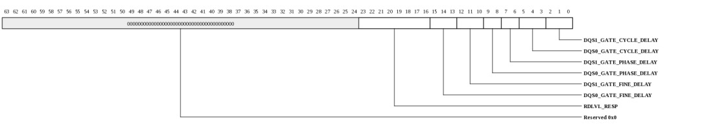
| Bits | Name | Type | Reset | Description
| 23:16 | RDLVL_RESP | RO | 0 | If RDLVL_EN is asserted and RDLVL_GATE_EN is de-asserted, returns the rising or falling edge of DQS sample of DQ for each channel. RDLVL_EDGE determines whether rising/falling. If RDLVL_GATE_EN is asserted, then the strobe0 sample of the DQS with the GATE is returned on [0], and the strobe1 sample of the DQS with the GATE is returned on [4]. 15:13 | DQS0_GATE_FINE_DELAY | RW | 0 | Controls the "gate" timing. There is a 3-bit value per strobe. A value of 0x0 means no additional delay. Each increment adds a small amount of delay. 12:10 | DQS1_GATE_FINE_DELAY | RW | 0 | Controls the "gate" latency in cycles. There is a 3-bit value per strobe. A value of 0x0 means no additional delay. Each increment adds a small amount of delay. 9:8 | DQS0_GATE_PHASE_DELAY | RW | 0 | Controls the "gate" timing. There is a 2-bit value per strobe. A value of 0x0 means no additional delay. Each increment adds 0.25 cycles of delay. 7:6 | DQS1_GATE_PHASE_DELAY | RW | 0 | Controls the "gate" latency in cycles. There is a 2-bit value per strobe. A value of 0x0 means no additional delay. Each increment adds 0.25 cycles of delay. 5:3 | DQS0_GATE_CYCLE_DELAY | RW | 0 | Controls the "gate" latency in cycles. There is a 3-bit value per strobe. A value of 0x0 means no additional delay. Each increment adds 1 cycle of delay. 2:0 | DQS1_GATE_CYCLE_DELAY | RW | 0 | Controls the "gate" timing. There is a 3-bit value per strobe. A value of 0x0 means no additional delay. Each increment adds 1-cycle of delay. |
|---|
DDR3 DATA2 RX Control Gate (MSH_DDR3_DATA2_RX_CONTROL_GATE: 0x04f8)
DDR3 DATA2 RX Control GateThis register is protected at level 1

| Bits | Name | Type | Reset | Description
| 23:16 | RDLVL_RESP | RO | 0 | If RDLVL_EN is asserted and RDLVL_GATE_EN is de-asserted, returns the rising or falling edge of DQS sample of DQ for each channel. RDLVL_EDGE determines whether rising/falling. If RDLVL_GATE_EN is asserted, then the strobe0 sample of the DQS with the GATE is returned on [0], and the strobe1 sample of the DQS with the GATE is returned on [4]. 15:13 | DQS0_GATE_FINE_DELAY | RW | 0 | Controls the "gate" timing. There is a 3-bit value per strobe. A value of 0x0 means no additional delay. Each increment adds a small amount of delay. 12:10 | DQS1_GATE_FINE_DELAY | RW | 0 | Controls the "gate" latency in cycles. There is a 3-bit value per strobe. A value of 0x0 means no additional delay. Each increment adds a small amount of delay. 9:8 | DQS0_GATE_PHASE_DELAY | RW | 0 | Controls the "gate" timing. There is a 2-bit value per strobe. A value of 0x0 means no additional delay. Each increment adds 0.25 cycles of delay. 7:6 | DQS1_GATE_PHASE_DELAY | RW | 0 | Controls the "gate" latency in cycles. There is a 2-bit value per strobe. A value of 0x0 means no additional delay. Each increment adds 0.25 cycles of delay. 5:3 | DQS0_GATE_CYCLE_DELAY | RW | 0 | Controls the "gate" latency in cycles. There is a 3-bit value per strobe. A value of 0x0 means no additional delay. Each increment adds 1 cycle of delay. 2:0 | DQS1_GATE_CYCLE_DELAY | RW | 0 | Controls the "gate" timing. There is a 3-bit value per strobe. A value of 0x0 means no additional delay. Each increment adds 1-cycle of delay. |
|---|
DDR3 DATA3 RX Control Gate (MSH_DDR3_DATA3_RX_CONTROL_GATE: 0x0500)
DDR3 DATA3 RX Control GateThis register is protected at level 1

| Bits | Name | Type | Reset | Description
| 23:16 | RDLVL_RESP | RO | 0 | If RDLVL_EN is asserted and RDLVL_GATE_EN is de-asserted, returns the rising or falling edge of DQS sample of DQ for each channel. RDLVL_EDGE determines whether rising/falling. If RDLVL_GATE_EN is asserted, then the strobe0 sample of the DQS with the GATE is returned on [0], and the strobe1 sample of the DQS with the GATE is returned on [4]. 15:13 | DQS0_GATE_FINE_DELAY | RW | 0 | Controls the "gate" timing. There is a 3-bit value per strobe. A value of 0x0 means no additional delay. Each increment adds a small amount of delay. 12:10 | DQS1_GATE_FINE_DELAY | RW | 0 | Controls the "gate" latency in cycles. There is a 3-bit value per strobe. A value of 0x0 means no additional delay. Each increment adds a small amount of delay. 9:8 | DQS0_GATE_PHASE_DELAY | RW | 0 | Controls the "gate" timing. There is a 2-bit value per strobe. A value of 0x0 means no additional delay. Each increment adds 0.25 cycles of delay. 7:6 | DQS1_GATE_PHASE_DELAY | RW | 0 | Controls the "gate" latency in cycles. There is a 2-bit value per strobe. A value of 0x0 means no additional delay. Each increment adds 0.25 cycles of delay. 5:3 | DQS0_GATE_CYCLE_DELAY | RW | 0 | Controls the "gate" latency in cycles. There is a 3-bit value per strobe. A value of 0x0 means no additional delay. Each increment adds 1 cycle of delay. 2:0 | DQS1_GATE_CYCLE_DELAY | RW | 0 | Controls the "gate" timing. There is a 3-bit value per strobe. A value of 0x0 means no additional delay. Each increment adds 1-cycle of delay. |
|---|
DDR3 DATA4 RX Control Gate (MSH_DDR3_DATA4_RX_CONTROL_GATE: 0x0508)
DDR3 DATA4 RX Control GateThis register is protected at level 1

| Bits | Name | Type | Reset | Description
| 23:16 | RDLVL_RESP | RO | 0 | If RDLVL_EN is asserted and RDLVL_GATE_EN is de-asserted, returns the rising or falling edge of DQS sample of DQ for each channel. RDLVL_EDGE determines whether rising/falling. If RDLVL_GATE_EN is asserted, then the strobe0 sample of the DQS with the GATE is returned on [0], and the strobe1 sample of the DQS with the GATE is returned on [4]. 15:13 | DQS0_GATE_FINE_DELAY | RW | 0 | Controls the "gate" timing. There is a 3-bit value per strobe. A value of 0x0 means no additional delay. Each increment adds a small amount of delay. 12:10 | DQS1_GATE_FINE_DELAY | RW | 0 | Controls the "gate" latency in cycles. There is a 3-bit value per strobe. A value of 0x0 means no additional delay. Each increment adds a small amount of delay. 9:8 | DQS0_GATE_PHASE_DELAY | RW | 0 | Controls the "gate" timing. There is a 2-bit value per strobe. A value of 0x0 means no additional delay. Each increment adds 0.25 cycles of delay. 7:6 | DQS1_GATE_PHASE_DELAY | RW | 0 | Controls the "gate" latency in cycles. There is a 2-bit value per strobe. A value of 0x0 means no additional delay. Each increment adds 0.25 cycles of delay. 5:3 | DQS0_GATE_CYCLE_DELAY | RW | 0 | Controls the "gate" latency in cycles. There is a 3-bit value per strobe. A value of 0x0 means no additional delay. Each increment adds 1 cycle of delay. 2:0 | DQS1_GATE_CYCLE_DELAY | RW | 0 | Controls the "gate" timing. There is a 3-bit value per strobe. A value of 0x0 means no additional delay. Each increment adds 1-cycle of delay. |
|---|
DDR3 DATA5 RX Control Gate (MSH_DDR3_DATA5_RX_CONTROL_GATE: 0x0510)
DDR3 DATA5 RX Control GateThis register is protected at level 1

| Bits | Name | Type | Reset | Description
| 23:16 | RDLVL_RESP | RO | 0 | If RDLVL_EN is asserted and RDLVL_GATE_EN is de-asserted, returns the rising or falling edge of DQS sample of DQ for each channel. RDLVL_EDGE determines whether rising/falling. If RDLVL_GATE_EN is asserted, then the strobe0 sample of the DQS with the GATE is returned on [0], and the strobe1 sample of the DQS with the GATE is returned on [4]. 15:13 | DQS0_GATE_FINE_DELAY | RW | 0 | Controls the "gate" timing. There is a 3-bit value per strobe. A value of 0x0 means no additional delay. Each increment adds a small amount of delay. 12:10 | DQS1_GATE_FINE_DELAY | RW | 0 | Controls the "gate" latency in cycles. There is a 3-bit value per strobe. A value of 0x0 means no additional delay. Each increment adds a small amount of delay. 9:8 | DQS0_GATE_PHASE_DELAY | RW | 0 | Controls the "gate" timing. There is a 2-bit value per strobe. A value of 0x0 means no additional delay. Each increment adds 0.25 cycles of delay. 7:6 | DQS1_GATE_PHASE_DELAY | RW | 0 | Controls the "gate" latency in cycles. There is a 2-bit value per strobe. A value of 0x0 means no additional delay. Each increment adds 0.25 cycles of delay. 5:3 | DQS0_GATE_CYCLE_DELAY | RW | 0 | Controls the "gate" latency in cycles. There is a 3-bit value per strobe. A value of 0x0 means no additional delay. Each increment adds 1 cycle of delay. 2:0 | DQS1_GATE_CYCLE_DELAY | RW | 0 | Controls the "gate" timing. There is a 3-bit value per strobe. A value of 0x0 means no additional delay. Each increment adds 1-cycle of delay. |
|---|
DDR3 DATA6 RX Control Gate (MSH_DDR3_DATA6_RX_CONTROL_GATE: 0x0518)
DDR3 DATA6 RX Control GateThis register is protected at level 1

| Bits | Name | Type | Reset | Description
| 23:16 | RDLVL_RESP | RO | 0 | If RDLVL_EN is asserted and RDLVL_GATE_EN is de-asserted, returns the rising or falling edge of DQS sample of DQ for each channel. RDLVL_EDGE determines whether rising/falling. If RDLVL_GATE_EN is asserted, then the strobe0 sample of the DQS with the GATE is returned on [0], and the strobe1 sample of the DQS with the GATE is returned on [4]. 15:13 | DQS0_GATE_FINE_DELAY | RW | 0 | Controls the "gate" timing. There is a 3-bit value per strobe. A value of 0x0 means no additional delay. Each increment adds a small amount of delay. 12:10 | DQS1_GATE_FINE_DELAY | RW | 0 | Controls the "gate" latency in cycles. There is a 3-bit value per strobe. A value of 0x0 means no additional delay. Each increment adds a small amount of delay. 9:8 | DQS0_GATE_PHASE_DELAY | RW | 0 | Controls the "gate" timing. There is a 2-bit value per strobe. A value of 0x0 means no additional delay. Each increment adds 0.25 cycles of delay. 7:6 | DQS1_GATE_PHASE_DELAY | RW | 0 | Controls the "gate" latency in cycles. There is a 2-bit value per strobe. A value of 0x0 means no additional delay. Each increment adds 0.25 cycles of delay. 5:3 | DQS0_GATE_CYCLE_DELAY | RW | 0 | Controls the "gate" latency in cycles. There is a 3-bit value per strobe. A value of 0x0 means no additional delay. Each increment adds 1 cycle of delay. 2:0 | DQS1_GATE_CYCLE_DELAY | RW | 0 | Controls the "gate" timing. There is a 3-bit value per strobe. A value of 0x0 means no additional delay. Each increment adds 1-cycle of delay. |
|---|
DDR3 DATA7 RX Control Gate (MSH_DDR3_DATA7_RX_CONTROL_GATE: 0x0520)
DDR3 DATA7 RX Control GateThis register is protected at level 1

| Bits | Name | Type | Reset | Description
| 23:16 | RDLVL_RESP | RO | 0 | If RDLVL_EN is asserted and RDLVL_GATE_EN is de-asserted, returns the rising or falling edge of DQS sample of DQ for each channel. RDLVL_EDGE determines whether rising/falling. If RDLVL_GATE_EN is asserted, then the strobe0 sample of the DQS with the GATE is returned on [0], and the strobe1 sample of the DQS with the GATE is returned on [4]. 15:13 | DQS0_GATE_FINE_DELAY | RW | 0 | Controls the "gate" timing. There is a 3-bit value per strobe. A value of 0x0 means no additional delay. Each increment adds a small amount of delay. 12:10 | DQS1_GATE_FINE_DELAY | RW | 0 | Controls the "gate" latency in cycles. There is a 3-bit value per strobe. A value of 0x0 means no additional delay. Each increment adds a small amount of delay. 9:8 | DQS0_GATE_PHASE_DELAY | RW | 0 | Controls the "gate" timing. There is a 2-bit value per strobe. A value of 0x0 means no additional delay. Each increment adds 0.25 cycles of delay. 7:6 | DQS1_GATE_PHASE_DELAY | RW | 0 | Controls the "gate" latency in cycles. There is a 2-bit value per strobe. A value of 0x0 means no additional delay. Each increment adds 0.25 cycles of delay. 5:3 | DQS0_GATE_CYCLE_DELAY | RW | 0 | Controls the "gate" latency in cycles. There is a 3-bit value per strobe. A value of 0x0 means no additional delay. Each increment adds 1 cycle of delay. 2:0 | DQS1_GATE_CYCLE_DELAY | RW | 0 | Controls the "gate" timing. There is a 3-bit value per strobe. A value of 0x0 means no additional delay. Each increment adds 1-cycle of delay. |
|---|
DDR3 DATA8 RX Control Gate (MSH_DDR3_DATA8_RX_CONTROL_GATE: 0x0528)
DDR3 DATA8 RX Control GateThis register is protected at level 1

| Bits | Name | Type | Reset | Description
| 23:16 | RDLVL_RESP | RO | 0 | If RDLVL_EN is asserted and RDLVL_GATE_EN is de-asserted, returns the rising or falling edge of DQS sample of DQ for each channel. RDLVL_EDGE determines whether rising/falling. If RDLVL_GATE_EN is asserted, then the strobe0 sample of the DQS with the GATE is returned on [0], and the strobe1 sample of the DQS with the GATE is returned on [4]. 15:13 | DQS0_GATE_FINE_DELAY | RW | 0 | Controls the "gate" timing. There is a 3-bit value per strobe. A value of 0x0 means no additional delay. Each increment adds a small amount of delay. 12:10 | DQS1_GATE_FINE_DELAY | RW | 0 | Controls the "gate" latency in cycles. There is a 3-bit value per strobe. A value of 0x0 means no additional delay. Each increment adds a small amount of delay. 9:8 | DQS0_GATE_PHASE_DELAY | RW | 0 | Controls the "gate" timing. There is a 2-bit value per strobe. A value of 0x0 means no additional delay. Each increment adds 0.25 cycles of delay. 7:6 | DQS1_GATE_PHASE_DELAY | RW | 0 | Controls the "gate" latency in cycles. There is a 2-bit value per strobe. A value of 0x0 means no additional delay. Each increment adds 0.25 cycles of delay. 5:3 | DQS0_GATE_CYCLE_DELAY | RW | 0 | Controls the "gate" latency in cycles. There is a 3-bit value per strobe. A value of 0x0 means no additional delay. Each increment adds 1 cycle of delay. 2:0 | DQS1_GATE_CYCLE_DELAY | RW | 0 | Controls the "gate" timing. There is a 3-bit value per strobe. A value of 0x0 means no additional delay. Each increment adds 1-cycle of delay. |
|---|
DDR3 WRLVL Control (MSH_DDR3_WRLVL_CONTROL: 0x0530)
DDR3 WRLVL ControlThis register is protected at level 1
| Bits | Name | Type | Reset | Description
| 19:2 | RESP | RO | 0 | For each slice the sample result is returned on either DQ[0] (for x8 mode) or DQ[1] and DQ[0] (for x4 mode). This register holds the result for all 9 data slices. 1 | STROBE | RW | 0 | Pulses DQS when enable is asserted. Default is de-asserted (0x0). 0 | EN | RW | 0 | Triggers write leveling when asserted (0x1). Default is de-asserted (0x0). |
|---|
DDR3 RDLVL Control (MSH_DDR3_RDLVL_CONTROL: 0x0538)
DDR3 RDLVL ControlThis register is protected at level 1
| Bits | Name | Type | Reset | Description
| 2 | EDGE | RW | 0 | When high, rising edge of DQS sample of DQ is returned on RDLVL_RESP. When low, falling edge of DQS sample of DQ is returned on RDLVL_RESP. Default is low (0x0). 1 | GATE_EN | RW | 0 | Triggers gate leveling when asserted (0x1). Default is de-asserted (0x0). 0 | EN | RW | 0 | Triggers read leveling when asserted (0x1). Default is de-asserted (0x0). |
|---|
DDR3 Compensation Calibration (MSH_DDR3_COMP_CAL: 0x0540)
DDR3 Compensation CalibrationThis register is protected at level 1
| Bits | Name | Type | Reset | Description
| 7:1 | SETTLING | RW | 0 | Hardware state machine waits for SETTING number of DRAM cycle to allow settling time. A typical setting time is 50 ns. Valid when DDR3_COMP_BYP.BYP=0. | 0: 1 cycle n: n+1 cycles 0 | START | RW | 0 | Writing 1 to this bit will start the hardware state machine to go through the IO impedance calibration. Valid when DDR3_COMP_BYP.BYP=0. | Read to indicate the calibration status. 1: hardware finishes the controller IO compensation sequence. 0: compensation is in progress. |
|---|
DDR3 Compensation Status (MSH_DDR3_COMP_STS: 0x0548)
DDR3 Compensation StatusThis register is protected at level 1
| Bits | Name | Type | Reset | Description
| 11:6 | TL | RO | 0 | IO compensation result for the pull-down termination code. The hardware state machine calculates the compensation result through the built-in calibration sequence. | 5:0 | TH | RO | 0 | IO compensation result for the pull-up termination code. The hardware state machine calculates the compensation result through the built-in calibration sequence. | |
|---|
DDR3 Compensation Calibration Bypass (MSH_DDR3_COMP_BYP: 0x0550)
DDR3 Compensation Calibration BypassThis register is protected at level 1
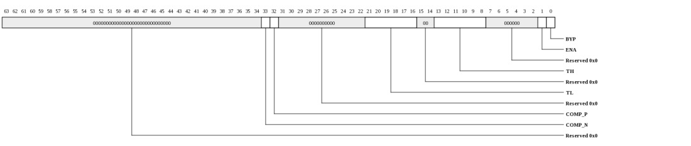
| Bits | Name | Type | Reset | Description
| 33 | COMP_N | RO | 0 | Compensation calibrator output for the pull-down termination. | 32 | COMP_P | RO | 0 | Compensation calibrator output for the pull-up termination. | 21:16 | TL | RW | 0 | IO compensation control for the pull-down termination code. Valid when BYP=1. | 13:8 | TH | RW | 0 | IO compensation control for the pull-up termination code. Valid when BYP=1. | 1 | ENA | RW | 0 | 1: enable compensation calibrator cell. 0: disable compensation calibrator cell and save power. Valid when BYP=1. | 0 | BYP | RW | 0 | 1: Enables the test mode where the hardware state machines is bypassed. Use ENA, TH, TL to control the compensation calibration. | 0: use the hardware state machine to control the compensation calibration. |
|---|
Performance Counter Control 0 (MSH_PERF_CTL0: 0x0600)
Non-saturating performance counters are supported. Upon counter value wraps around, a corresponding interrupt can be generated. The performance counters are read to clear, and can be frozen by writing 0 to the ENA.A memory request will be marked if it matches with the selected ATTR, QDN, OP, and SRC (refer to MSH_PRIO_CTLx registers). This memory request will be called as a MARK request. The memory controller starts to mark QDN request when MARK_ENA=1 and stops to mark QDN requests when MARK_ENA=0.
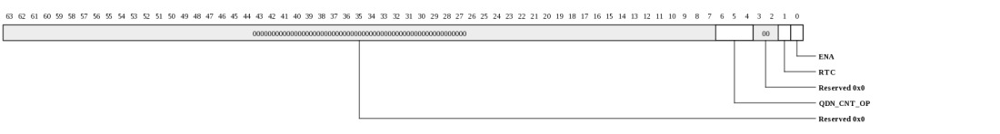
| Bits | Name | Type | Reset | Description
| 6:4 | QDN_CNT_OP | RW | 0 | count QDN requests with matched OP. | 0: count TILE read requests only, 1: count IO read requests only, 2: count TILE write requests only, 4: count mask write requests only (non-cacheline writes or writes with mask). the count does not include any SCRUB requests. 7: count all requests. 1 | RTC | RW | 0 | 1: performance counters are read to clear. | 0 | ENA | RW | 1 | 1: enable all performance counters. when ENA=0, freeze. when ENA goes to 1 (from 0), reset and enabled. when ENA=1, enabled. | |
|---|
Performance Counter Control 1 (MSH_PERF_CTL1: 0x0608)
Performance Counter Control 1| Bits | Name | Type | Reset | Description
| 28:24 | MODE3 | RW | 3 | Performance counter mode selection for PERF_CNT_3 (same encoding as MODE0). | 20:16 | MODE2 | RW | 2 | Performance counter mode selection for PERF_CNT_2 (same encoding as MODE0). | 12:8 | MODE1 | RW | 1 | Performance counter mode selection for PERF_CNT_1 (same encoding as MODE0). | 4:0 | MODE0 | RW | 0 | Performance counter mode selection for PERF_CNT_0 (see description). |
|
|---|
Performance Counter Control 2 (MSH_PERF_CTL2: 0x0610)
Performance Counter Control 2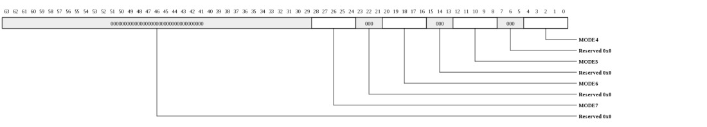
| Bits | Name | Type | Reset | Description
| 28:24 | MODE7 | RW | 7 | Performance counter mode selection for PERF_CNT_7 (same encoding as MODE0). | 20:16 | MODE6 | RW | 6 | Performance counter mode selection for PERF_CNT_6 (same encoding as MODE0). | 12:8 | MODE5 | RW | 5 | Performance counter mode selection for PERF_CNT_5 (same encoding as MODE0). | 4:0 | MODE4 | RW | 4 | Performance counter mode selection for PERF_CNT_4 (same encoding as MODE0). | |
|---|
Performance Counter Control 3 (MSH_PERF_CTL3: 0x0618)
Performance Counter Control 3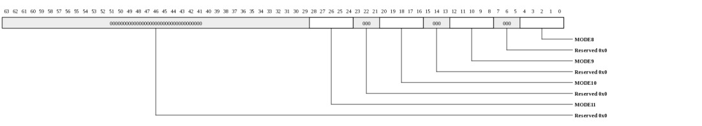
| Bits | Name | Type | Reset | Description
| 28:24 | MODE11 | RW | 11 | Performance counter mode selection for PERF_CNT_11 (same encoding as MODE0). | 20:16 | MODE10 | RW | 10 | Performance counter mode selection for PERF_CNT_10 (same encoding as MODE0). | 12:8 | MODE9 | RW | 9 | Performance counter mode selection for PERF_CNT_9 (same encoding as MODE0). | 4:0 | MODE8 | RW | 8 | Performance counter mode selection for PERF_CNT_8 (same encoding as MODE0). | |
|---|
Performance Counter Control 4 (MSH_PERF_CTL4: 0x0620)
Performance Counter Control 4| Bits | Name | Type | Reset | Description
| 28:24 | MODE15 | RW | 15 | Performance counter mode selection for PERF_CNT_15 (same encoding as MODE0). | 20:16 | MODE14 | RW | 14 | Performance counter mode selection for PERF_CNT_14 (same encoding as MODE0). | 12:8 | MODE13 | RW | 13 | Performance counter mode selection for PERF_CNT_13 (same encoding as MODE0). | 4:0 | MODE12 | RW | 12 | Performance counter mode selection for PERF_CNT_12 (same encoding as MODE0). | |
|---|
Performance Counter 0 (MSH_PERF_CNT_0: 0x0630)
Performance Counter 0
| Bits | Name | Type | Reset | Description
| 31:0 | PERF_CNT_0 | RO | 0 | Performance Counter 0. | |
|---|
Performance Counter 1 (MSH_PERF_CNT_1: 0x0638)
Performance Counter 1| Bits | Name | Type | Reset | Description
| 31:0 | PERF_CNT_1 | RO | 0 | Performance Counter 1. | |
|---|
Performance Counter 2 (MSH_PERF_CNT_2: 0x0640)
Performance Counter 2| Bits | Name | Type | Reset | Description
| 31:0 | PERF_CNT_2 | RO | 0 | Performance Counter 2. | |
|---|
Performance Counter 3 (MSH_PERF_CNT_3: 0x0648)
Performance Counter 3| Bits | Name | Type | Reset | Description
| 31:0 | PERF_CNT_3 | RO | 0 | Performance Counter 3. | |
|---|
Performance Counter 4 (MSH_PERF_CNT_4: 0x0650)
Performance Counter 4| Bits | Name | Type | Reset | Description
| 31:0 | PERF_CNT_4 | RO | 0 | Performance Counter 4. | |
|---|
Performance Counter 5 (MSH_PERF_CNT_5: 0x0658)
Performance Counter 5
| Bits | Name | Type | Reset | Description
| 31:0 | PERF_CNT_5 | RO | 0 | Performance Counter 5. | |
|---|
Performance Counter 6 (MSH_PERF_CNT_6: 0x0660)
Performance Counter 6| Bits | Name | Type | Reset | Description
| 31:0 | PERF_CNT_6 | RO | 0 | Performance Counter 6. | |
|---|
Performance Counter 7 (MSH_PERF_CNT_7: 0x0668)
Performance Counter 7
| Bits | Name | Type | Reset | Description
| 31:0 | PERF_CNT_7 | RO | 0 | Performance Counter 7. | |
|---|
Performance Counter 8 (MSH_PERF_CNT_8: 0x0670)
Performance Counter 8| Bits | Name | Type | Reset | Description
| 31:0 | PERF_CNT_8 | RO | 0 | Performance Counter 8. | |
|---|
Performance Counter 9 (MSH_PERF_CNT_9: 0x0678)
Performance Counter 9| Bits | Name | Type | Reset | Description
| 31:0 | PERF_CNT_9 | RO | 0 | Performance Counter 9. | |
|---|
Performance Counter 10 (MSH_PERF_CNT_10: 0x0680)
Performance Counter 10| Bits | Name | Type | Reset | Description
| 31:0 | PERF_CNT_10 | RO | 0 | Performance Counter 10. | |
|---|
Performance Counter 11 (MSH_PERF_CNT_11: 0x0688)
Performance Counter 11| Bits | Name | Type | Reset | Description
| 31:0 | PERF_CNT_11 | RO | 0 | Performance Counter 11. | |
|---|
Performance Counter 12 (MSH_PERF_CNT_12: 0x0690)
Performance Counter 12| Bits | Name | Type | Reset | Description
| 31:0 | PERF_CNT_12 | RO | 0 | Performance Counter 12. | |
|---|
Performance Counter 13 (MSH_PERF_CNT_13: 0x0698)
Performance Counter 13| Bits | Name | Type | Reset | Description
| 31:0 | PERF_CNT_13 | RO | 0 | Performance Counter 13. | |
|---|
Performance Counter 14 (MSH_PERF_CNT_14: 0x06a0)
Performance Counter 14| Bits | Name | Type | Reset | Description
| 31:0 | PERF_CNT_14 | RO | 0 | Performance Counter 14. | |
|---|
Performance Counter 15 (MSH_PERF_CNT_15: 0x06a8)
Performance Counter 15| Bits | Name | Type | Reset | Description
| 31:0 | PERF_CNT_15 | RO | 0 | Performance Counter 15. | |
|---|
Access Error Info (MSH_ACC_ERROR_INFO: 0x0700)
Access Error Info is updated when RANGE_ERR or DISABLE_ERR occurs (but not ECC errors).This register is protected at level 1
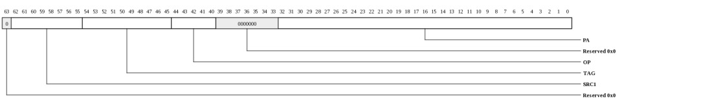
| Bits | Name | Type | Reset | Description
| 62:55 | SRC1 | RO | 0 | SRC1[7:0] of the first offending QDN request | 54:45 | TAG | RO | 0 | Tag[9:0] of the first offending QDN request | 44:40 | OP | RO | 0 | Op[4:0] of the first offending QDN request. | READ (0x0) WRITE (0x2) IO_READ (0x7) SCRUB (0x1a) 32:0 | PA | RO | 0 | PA[38:6] of the first offending QDN request. | |
|---|
ECC Error Info (MSH_ECC_ERROR_INFO: 0x0708)
ECC Error Info.The ECC_ERROR_INFO.TWOBIT_H and ECC_ERROR_INFO.TWOBIT_L bits are updated at the same time, when either high or low data have two or more bits ECC error. The first error status is kept in the flag.
The ECC_ERROR_INFO.ONEBIT_H, ECC_ERROR_INFO.POS_H, ECC_ERROR_INFO.ONEBIT_L, ECC_ERROR_INFO.POS_L bits are updated at the same time when either high or low data have one bit ECC error. The first error status is kept in the flag. Note that two or more bits ECC error does not prevent from error logging on these 1 bit ECC error logging.
Error log registers will resume error logging only if the corresponding error interrupt status bit is cleared (for example first offending error is processed).
This register is protected at level 1
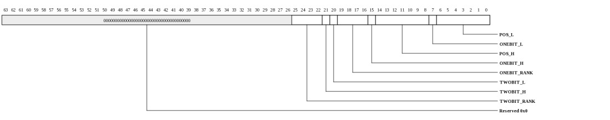
| Bits | Name | Type | Reset | Description
| 25:22 | TWOBIT_RANK | RO | 0 | Rank associated with the two or more bits ECC error. The captured rank is the logical rank before the rank mapping (MSH_DDR3_DIMM_CFG.RANK_MAPPING). | 21 | TWOBIT_H | RO | 0 | 1: Two or more bits ECC error detected on data[143:72] | 20 | TWOBIT_L | RO | 0 | 1: Two or more bits ECC error detected on data[71:0]. | Note that the ECC_ERROR_INFO.TWOBIT_L and ECC_ERROR_INFO.TWOBIT_H are updated at the same time when either high or low data have two or more bits ECC error. 19:16 | ONEBIT_RANK | RO | 0 | Rank associated with the single bit ECC error. The captured rank is the logical rank before the rank mapping (MSH_DDR3_DIMM_CFG.RANK_MAPPING). | 15 | ONEBIT_H | RO | 0 | 1: single bit ECC error detected on data[143:72] | 14:8 | POS_H | RO | 0 | Single bit ECC error bit location. | n: bit[n+72]. Valid only if ECC_ERROR_INFO.ONEBIT_H=1. 7 | ONEBIT_L | RO | 0 | 1: single bit ECC error detected on data[71:0] | 6:0 | POS_L | RO | 0 | Single bit ECC error bit location. | n: bit[n]. Valid only if ECC_ERROR_INFO.ONEBIT_L=1. Note that the ECC_ERROR_INFO.POS_L, ECC_ERROR_INFO.ONEBIT_L, ECC_ERROR_INFO.POS_H, ECC_ERROR_INFO.ONEBIT_H are updated at the same time. The error status is kept in the logging register until a new error status can be captured. |
|---|
MMIO0 Error Information (MSH_MMIO0_ERROR_INFO: 0x0710)
Provides diagnostics information when an error occurs on QDN0. Error logging is captured whenever the QDN0_ERR - An unsupported QDN request was received, typically usage error, e.g. mmio protection error, unsupported opc interrupt condition occurs.This register is protected at level 1

| Bits | Name | Type | Reset | Description
| 56:52 | OPC | RO | 0 | Opcode of request. MMIO supports only MMIO_READ (0x0e) and MMIO_WRITE (0x0f). All others are reserved and will only occur on a misconfigured TLB. | 51:12 | PA | RO | 0 | Full PA from request. | 11:8 | SIZE | RO | 0 | Encoded request size. 0=1B, 1=2B, 2=4B, 3=8B, 4=16B, 5=32B, 6=48B, 7=64B. MMIO operations to MSH must always be 8 bytes. | 7:0 | SRC | RO | 0 | Source Tile in {x[3:0],y[3:0]} format. | |
|---|
MMIO1 Error Information (MSH_MMIO1_ERROR_INFO: 0x0718)
Provides diagnostics information when an error occurs on QDN1. No MMIO packet should be sent to QDN1. Error logging is captured whenever the QDN1_ERR - An unsupported QDN request was received, e.g. QDN1 should not receive any MMIO packet interrupt condition occursThis register is protected at level 1
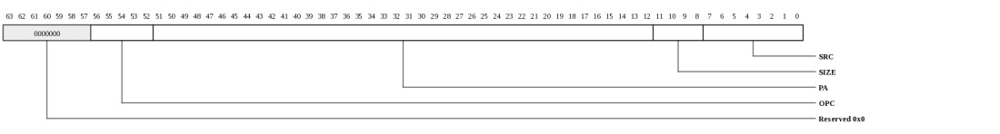
| Bits | Name | Type | Reset | Description
| 56:52 | OPC | RO | 0 | Opcode of request. MMIO supports only MMIO_READ (0x0e) and MMIO_WRITE (0x0f). All others are reserved and will only occur on a misconfigured TLB. | 51:12 | PA | RO | 0 | Full PA from request. | 11:8 | SIZE | RO | 0 | Encoded request size. 0=1B, 1=2B, 2=4B, 3=8B, 4=16B, 5=32B, 6=48B, 7=64B. MMIO operations to MSH must always be 8 bytes. | 7:0 | SRC | RO | 0 | Source Tile in {x[3:0],y[3:0]} format. | |
|---|
QDN Credit (MSH_CREDIT: 0x0740)
QDN Credits indicate the current status of the two QDN ingress ports. The less credit one QDN port has, the busier this QDN port is. An QDN port might be particularly busier because this QDN port receives more memory requests.| Bits | Name | Type | Reset | Description
| 7:4 | CREDIT1_AVL | RO | 15 | Available scheduler credit on QDN port 1 (to Tile). 0: no credit available. | 3:0 | CREDIT0_AVL | RO | 15 | Available scheduler credit on QDN port 0 (to Tile). 0: no credit available. | |
|---|
Command RAM Occupancy Count (MSH_CRAM_CNT: 0x0748)
Command RAM occupancy count.| Bits | Name | Type | Reset | Description
| 9:0 | CRAM_CNT | RO | 0 | counts the number of the QDN request (including read, write, test and set) pending in the command RAM. n: n request. The command RAM has space to store 256*2 memory read/write requests. | |
|---|
Data RAM Occupancy Count (MSH_DRAM_CNT: 0x0750)
Data RAM occupancy count.| Bits | Name | Type | Reset | Description
| 7:0 | DRAM_CNT | RO | 0 | counts the number of the QDN write requests pending in the data RAM. Each QDN write data occupies one block of space. The Data RAM has space to store 256/2 memory write requests (data portion of the write requests are stored in this RAM). | |
|---|
CAM Occupancy Count (MSH_CAM_CNT: 0x0758)
CAM occupancy count.| Bits | Name | Type | Reset | Description
| 5:0 | CAM_CNT | RO | 0 | counts the number of the QDN requests pending in the CAM. n: n requests. The CAM has space to store 32 memory read/write requests. | |
|---|
Status (MSH_STATUS: 0x0760)
Status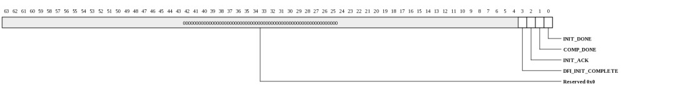
| Bits | Name | Type | Reset | Description
| 3 | DFI_INIT_COMPLETE | RO | 0 | 1: PHY initialization checkpoint is complete. | 2 | INIT_ACK | RO | 0 | 1: Acknowledge for INIT_REFRESH (init refresh), INIT_PCH_ALL (precharge all), INIT_MR (DRAM mode programming, RDIMM control word programming), and CAL_REQ (ZQ calibration). | 1 | COMP_DONE | RO | 0 | 1: hardware finishes the controller IO compensation sequence. | 0 | INIT_DONE | RO | 0 | 1: hardware finishes the DRAM initialization sequence. | |
|---|
Low Power Status (MSH_STATUS_LOWPOWER: 0x0768)
Low Power Status| Bits | Name | Type | Reset | Description
| 31:16 | SR | RO | 0 | [i] = 1: rank i is self-refresh | [i] = 0: rank i is not in self-refresh 15:0 | PD | RO | 0 | [i] = 1: rank i is power down | [i] = 0: rank i is not in power down |
|---|
Diagnostic Control (MSH_DIAG_CTL: 0x0780)
Diagnostic ControlThis register is protected at level 1
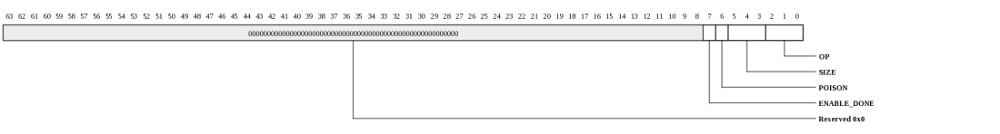
| Bits | Name | Type | Reset | Description
| 7 | ENABLE_DONE | RW | 1 | Read this bit to find the status of the diagnostic command: | 1: previous diagnostic command is done (for example RDAT contains valid read data for a read or test and set command). 0: previous diagnostic command is busy (not done). Writing 1 to this bit will send a diag command to the memory controller. Note that to set this bit, make sure the associated diagnostic address and diagnostic write data register must be valid and previous diagnostic command is done. 6 | POISON | RW | 0 | Reserved. | 5:3 | SIZE | RW | 0 | Diagnostic read command size | 0: 8 bytes n: n bytes Diagnostic write command size is always 64 bytes. 2:0 | OP | RW | 0 | Diagnostic command Opcode type. Valid settings: |
|
|---|
Diagnostic Address (MSH_DIAG_ADDR: 0x0788)
Diagnostic AddressThis register is protected at level 1
| Bits | Name | Type | Reset | Description
| 38:0 | ADDR | RW | 0 | Diagnostic command address (byte address 38:0). | |
|---|
Diagnostic Write Data (MSH_DIAG_WDATA: 0x0790)
Diagnostic Write DataThis register is protected at level 1

| Bits | Name | Type | Reset | Description
| 63:0 | WDAT | RW | 0 | Diagnostic write data. The same 8B diagnostic write data will be used for the all 8 bursts of DRAM writes. | |
|---|
Diagnostic Read Data (MSH_DIAG_RDATA: 0x0798)
Diagnostic Read DataThis register is protected at level 1

| Bits | Name | Type | Reset | Description
| 63:0 | RDAT | RO | 0 | Diagnostic read data. Up to eight bytes of diagnostic read can be performed at a time. In case less than eight bytes are read, least significant bits of RDAT contain valid read data. | |
|---|
BIST Run (MSH_BIST_RUN: 0x07a0)
BIST RunThis register is protected at level 1
| Bits | Name | Type | Reset | Description
| 0 | CTL | RW | 0 | Write 1 to start BIST run. Make sure the configuration registers are stable and the BIST hardware is ready to run. | Read to indicate the BIST status. 0: BIST run is in progress. 1: BIST run is done. |
|---|
BIST Control (MSH_BIST_CTL: 0x07a8)
The BIST control register defins a test pattern used in BIST.e.g. SEQ_MODE=2, BLOCK_SIZE=3, READ_REPEAT=2, RUN_COUNT=1
ADDR_MODE=0, BIST_ADDR_START=0, BIST_ADDR_END=7,
(w0w1w2w3) // block size of 4 writes starting from address "0" to address "3"
(r0r1r2r3) // block size of 4 reads starting from address "0"
(r0r1r2r3) // read repeat
(r0r1r2r3) // read repeat
(w4w5w6w7) // continue on block size of 4 writes starting from address "4"
(r4r5r6r7) // block size of 4 reads
(r4r5r6r7) // read repeat
(r4r5r6r7) // read repeat
(w0w1w2w3) // run_count=1
(r0r1r2r3) // run_count=1
(r0r1r2r3) // run_count=1
(r0r1r2r3) // run_count=1
(w4w5w6w7) // run_count=1
(r4r5r6r7) // run_count=1
(r4r5r6r7) // run_count=1
(r4r5r6r7) // run_count=1
This register is protected at level 1
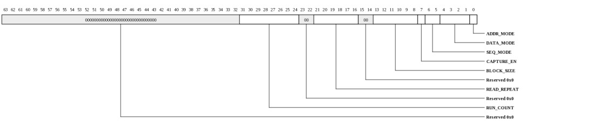
| Bits | Name | Type | Reset | Description
| 31:24 | RUN_COUNT | RW | 0 | 0: run 1 time on test pattern | n: run n+1 times on test pattern 21:16 | READ_REPEAT | RW | 0 | 0: repeat 1 time on the read sequence | n: repeat n+1 times on the read sequence 13:8 | BLOCK_SIZE | RW | 0 | 0: 1 DDR burst-of-8 | n: n+1 DDR burst-of-8 Note that the address space (BIST_ADDR_CNT or BIST_ADDR_START/BIST_ADDR_END) must be a multiple of BLOCK_SIZE. 7 | CAPTURE_EN | RW | 0 | 0: disables the signature capture logic | 1: enables the signature capture logic 6:5 | SEQ_MODE | RW | 0 | Test Sequence. |
4:1 | DATA_MODE | RW | 0 | Data Mode. |
0 | ADDR_MODE | RW | 0 | Address Mode. |
|
|---|
BIST Address Enable (MSH_BIST_ADDR_ENABLE: 0x07b0)
BIST Address EnableThis register is protected at level 1
| Bits | Name | Type | Reset | Description
| 38:6 | VAL | RW | 15 | Address Enable. | [n]=1: enable address bit n. |
|---|
BIST Address Start (MSH_BIST_ADDR_START: 0x07b8)
BIST Address StartThis register is protected at level 1

| Bits | Name | Type | Reset | Description
| 38:6 | VAL | RW | 0 | Start address. Valid when BIST_CTL.ADDR_MODE=0 or BIST_CTL.ADDR_MODE=1. Address must be 64 bytes aligned, i.e. 6 LSBs are always 0s and are not configurable. | |
|---|
BIST Address End (MSH_BIST_ADDR_END: 0x07c0)
BIST Address EndThis register is protected at level 1

| Bits | Name | Type | Reset | Description
| 38:6 | VAL | RW | 15 | End address. Valid when ADDR_MODE=0. Address must be 64 bytes aligned, i.e. 6 LSBs are always 0s and are not configurable. The address range (BIST_ADDR_END-BIST_ADDR_START+1) must be power of two. For example, | 1 GB address space can be specified as: BIST_ADDR_START.VAL=0, BIST_ADDR_END.VAL=2^(30-6)-1 |
|---|
BIST Address Count (MSH_BIST_ADDR_CNT: 0x07c8)
BIST Address CountThis register is protected at level 1
| Bits | Name | Type | Reset | Description
| 32:0 | VAL | RW | 0 | Number of address used in the test. Valid when ADDR_MODE=1. | n: test n addresses. n should be in power of 2. n should be >= 16 if BIST_CTL.READ_REPEAT != 0 |
|---|
BIST Data Seed Low (MSH_BIST_DATA_SEED_L: 0x07d0)
BIST Data Seed LowThis register is protected at level 1
| Bits | Name | Type | Reset | Description
| 63:0 | VAL | RW | 0 | Valid when DATA_MODE=7. It is used to initialize the LFSR register to generate the pseudo-random data. | |
|---|
BIST Data Seed High (MSH_BIST_DATA_SEED_H: 0x07d8)
BIST Data Seed HighThis register is protected at level 1

| Bits | Name | Type | Reset | Description
| 63:0 | VAL | RW | 0 | Valid when DATA_MODE=7. Used to initialize the LFSR register to generate the pseudo-random data. | |
|---|
BIST Data Mask (MSH_BIST_DATA_MASK: 0x07e0)
BIST Data MaskThis register is protected at level 1

| Bits | Name | Type | Reset | Description
| 63:0 | VAL | RW | 0 | Used to bit mask external read data. | bit[n]=0 check read data bit[n], bit[n]=1 ignore read data bit[n] |
|---|
BIST ACC Signature (MSH_BIST_ACC_SIGNATURE: 0x07e8)
BIST ACC SignatureThis register is protected at level 1
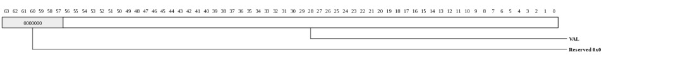
| Bits | Name | Type | Reset | Description
| 56:0 | VAL | RO | 0 | Read Data Signature. | |
|---|
BIST Data Signature Low (MSH_BIST_DATA_SIGNATURE_L: 0x07f0)
BIST Data Signature LowThis register is protected at level 1

| Bits | Name | Type | Reset | Description
| 63:0 | VAL | RO | 0 | Read Data Signature, low 64 bits. | |
|---|
BIST Data Signature High (MSH_BIST_DATA_SIGNATURE_H: 0x07f8)
BIST Data Signature HighThis register is protected at level 1

| Bits | Name | Type | Reset | Description
| 63:0 | VAL | RO | 0 | Read Data Signature, high 64 bits. | |
|---|
MMIO Service Domain Configuration (MSH_MMIO_INIT_CTL: 0x2000)
Initialization control for the MMIO service domain tableThis register is protected at level 2
| Bits | Name | Type | Reset | Description
| 1:0 | IDX | RW | 0 | Index into service domain table. | |
|---|
MMIO service domain table data (MSH_MMIO_INIT_DAT: 0x2008)
Read/Write data for the service domain tableThis register is protected at level 2
| Bits | Name | Type | Reset | Description
| 1:0 | DAT | RO | 0 | Service domain table data. Each entry consists of two words, addressed by MMIO_INIT_CTL.IDX[0]. Each bit in an entry corresponds to a service or set of services. A set bit allows access to that service for MMIO accesses that address this service domain table entry. | Word0: {ConfigProtectionLevels(2)} |
|---|
Interrupt vector, write-one-to-clear (MSH_INT_VEC0: 0x3000)
This describes the interrupt status vector that is accessible through INT_VEC0_W1TC.This register is protected at level 1
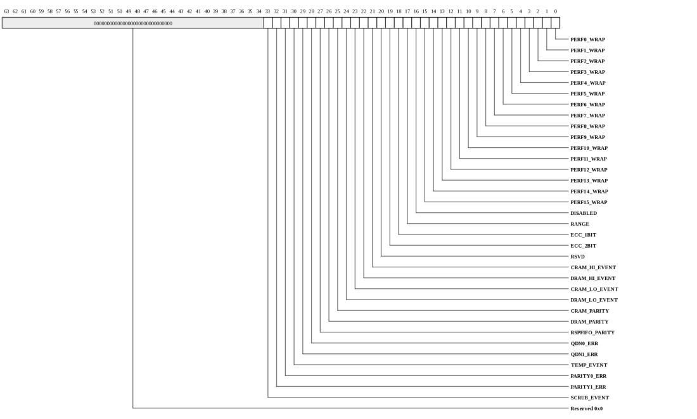
| Bits | Name | Type | Reset | Description
| 33 | SCRUB_EVENT | RW | 0 | SCRUB_EVENT - A memory scrub command has been scheduled | 32 | PARITY1_ERR | RW | 0 | PARITY1_ERR - even parity error is detected by the second set of DIMMs across the address and command input (A/BA/RAS#/CAS#/WE#) | 31 | PARITY0_ERR | RW | 0 | PARITY0_ERR - even parity error is detected by the first set of DIMMs across the address and command input (A/BA/RAS#/CAS#/WE#) | 30 | TEMP_EVENT | RW | 0 | TEMP_EVENT - temperature event is asserted by the DIMM temperature sensor when critical temperature thresholds have been exceeded. | 29 | QDN1_ERR | RW | 0 | QDN1_ERR - An unsupported QDN request was received, e.g. QDN1 should not receive any MMIO packet | 28 | QDN0_ERR | RW | 0 | QDN0_ERR - An unsupported QDN request was received, typically usage error, e.g. mmio protection error, unsupported opc | 27 | RSPFIFO_PARITY | RW | 0 | RSPFIFO_PARITY - Response FIFO parity error | 26 | DRAM_PARITY | RW | 0 | DRAM_PARITY - Data RAM parity error | 25 | CRAM_PARITY | RW | 0 | CRAM_PARITY - Command RAM parity error | 24 | DRAM_LO_EVENT | RW | 0 | DRAM_LO_EVENT - Receives a memory request when pending memory write (only) requests in the Data RAM are less than the DRAM_LEVEL in the EBUF_THRESHOLD_LO register. | 23 | CRAM_LO_EVENT | RW | 0 | CRAM_LO_EVENT - Receives a memory request when all pending memory requests in the Command RAM are less than the CRAM_LEVEL in the EBUF_THRESHOLD_LO register. | 22 | DRAM_HI_EVENT | RW | 0 | DRAM_HI_EVENT - Receives a memory request when pending memory write (only) requests in the Data RAM are more than (or equal to) the DRAM_LEVEL in the EBUF_THRESHOLD_HI register. | 21 | CRAM_HI_EVENT | RW | 0 | CRAM_HI_EVENT - Receives a memory request when all pending memory requests in the Command RAM are more than (or equal to) the CRAM_LEVEL in the EBUF_THRESHOLD_HI register. | 20 | RSVD | RW | 0 | reserved. | 19 | ECC_2BIT | RW | 0 | ECC_2BIT - Multi-bit error detected in DRAM access. | 18 | ECC_1BIT | RW | 0 | ECC_1BIT - Single bit error detected in DRAM access. | 17 | RANGE | RW | 0 | RANGE - A memory request references to an address that is outside of valid address range defined by the ADDRESS_RANGE register. | 16 | DISABLED | RW | 0 | DISABLED - A memory request was received while the memory controller was disabled. The memory controller will return bogus read response and write acknowledge (if necessary) with error status. | 15 | PERF15_WRAP | RW | 0 | PERF15_WRAP - Performance Counter 15 wraps | 14 | PERF14_WRAP | RW | 0 | PERF14_WRAP - Performance Counter 14 wraps | 13 | PERF13_WRAP | RW | 0 | PERF13_WRAP - Performance Counter 13 wraps | 12 | PERF12_WRAP | RW | 0 | PERF12_WRAP - Performance Counter 12 wraps | 11 | PERF11_WRAP | RW | 0 | PERF11_WRAP - Performance Counter 11 wraps | 10 | PERF10_WRAP | RW | 0 | PERF10_WRAP - Performance Counter 10 wraps | 9 | PERF9_WRAP | RW | 0 | PERF9_WRAP - Performance Counter 9 wraps | 8 | PERF8_WRAP | RW | 0 | PERF8_WRAP - Performance Counter 8 wraps | 7 | PERF7_WRAP | RW | 0 | PERF7_WRAP - Performance Counter 7 wraps | 6 | PERF6_WRAP | RW | 0 | PERF6_WRAP - Performance Counter 6 wraps | 5 | PERF5_WRAP | RW | 0 | PERF5_WRAP - Performance Counter 5 wraps | 4 | PERF4_WRAP | RW | 0 | PERF4_WRAP - Performance Counter 4 wraps | 3 | PERF3_WRAP | RW | 0 | PERF3_WRAP - Performance Counter 3 wraps | 2 | PERF2_WRAP | RW | 0 | PERF2_WRAP - Performance Counter 2 wraps | 1 | PERF1_WRAP | RW | 0 | PERF1_WRAP - Performance Counter 1 wraps | 0 | PERF0_WRAP | RW | 0 | PERF0_WRAP - Performance Counter 0 wraps | |
|---|
Interrupt vector-0, write-one-to-clear (MSH_INT_VEC0_W1TC: 0x3000)
Interrupt status vector with write-one-to-clear functionality. Provides access to the same status bits that are visible in INT_VEC0_RTC. Writing a 1 clears the status bit.This register is protected at level 1
| Bits | Name | Type | Reset | Description
| 33:0 | INT_VEC0_W1TC | RW | 0 | Interrupt status vector with write-one-to-clear functionality. Provides access to the same status bits that are visible in INT_VEC0_RTC. Writing a 1 clears the status bit. | |
|---|
Interrupt vector-0, read-to-clear (MSH_INT_VEC0_RTC: 0x3008)
Interrupt status vector with read-to-clear functionality. Provides access to the same status bits that are visible in INT_VEC0_W1TC. Reading this register clears all of the associated interrupts.This register is protected at level 1
| Bits | Name | Type | Reset | Description
| 33:0 | INT_VEC0_RTC | RO | 0 | Interrupt status vector with read-to-clear functionality. Provides access to the same status bits that are visible in INT_VEC0_W1TC. Reading this register clears all of the associated interrupts. | |
|---|
Bindings for interrupt vectors (MSH_INT_BIND: 0x3100)
This register provides read/write access to all of the interrupt bindings for the MSH. The VEC_SEL field is used to select the vector being configured and the BIND_SEL selects the interrupt within the vector.This register is protected at level 2
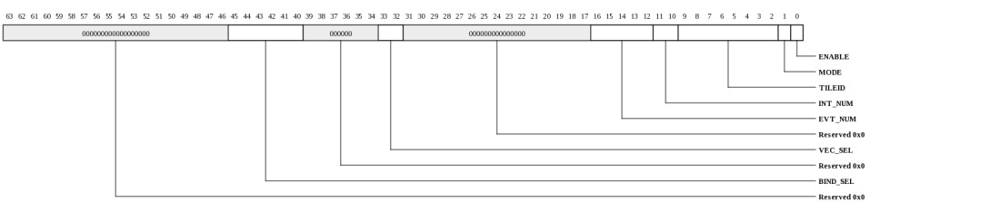
| Bits | Name | Type | Reset | Description
| 45:40 | BIND_SEL | RW | HW | Selects binding within the vector selected by VEC_SEL. | 33:32 | VEC_SEL | RW | 0 | Selects vector whose bindings are to be accessed. |
16:12 | EVT_NUM | RW | HW | Event number to be delivered to Tile | 11:10 | INT_NUM | RW | HW | Interrupt number to be delivered to Tile | 9:2 | TILEID | RW | HW | Tile targeted for this interrupt in {x[3:0],y[3:0]} format. | 1 | MODE | RW | 0 | When 1, interrupt will be dispatched each time it occurs. When 0, the interrupt is only sent if the status bit is clear. | 0 | ENABLE | RW | 0 | Enable the interrupt. When 0, the interrupt won't be dispatched, however the STATUS bit will continue to be updated. | |
|---|
Copyright © 2014 Tilera® Corporation. All rights reserved. Printed in the United States of America.
No part of this book may be reproduced, stored in a retrieval system, or transmitted in any form or by any means, electronic, mechanical, photocopying, recording, or otherwise, except as may be expressly permitted by the applicable copyright statutes or in writing by the Publisher.
The following are registered trademarks of Tilera Corporation: Tilera and the Tilera logo. The following are trademarks of Tilera Corporation: Embedding Multicore, The Multicore Company, Tile Processor, TILE Architecture, TILE64, TILEPro, TILEPro36, TILEPro64, TILExpress, TILExpress-64, TILExpressPro-64, TILExpress-20G, TILExpressPro-20G, TILExpressPro-22G, iMesh, TileDirect, TILEmpower, TILEmpower-Gx, TILEncore, TILEncorePro, TILEncore-Gx, TILE-Gx, TILE-Gx16, TILE-Gx36, TILE-Gx64, TILE-Gx100, TILE-Gx3000, TILE-Gx5000, TILE-Gx8000, DDC (Dynamic Distributed Cache), Multicore Development Environment, Gentle Slope Programming, iLib, TMC (Tilera Multicore Components), hardwall, Zero Overhead Linux (ZOL), MiCA (Multicore iMesh Coprocessing Accelerator), and mPIPE (multicore Programmable Intelligent Packet Engine). All other trademarks and/or registered trademarks are the property of their respective owners.
Third-party software: The Tilera IDE makes use of the BeanShell scripting library. Source code for the BeanShell library can be found at the BeanShell website (http://www.beanshell.org/developer.html).
The following is a trademark of Marvell Semiconductor, Inc.: Distributed Switching Architecture (DSA).
This document contains advance information on Tilera products that are in development, sampling or initial production phases. This information and specifications contained herein are subject to change without notice at the discretion of Tilera Corporation.
No license, express or implied by estoppels or otherwise, to any intellectual property is granted by this document. Tilera disclaims any express or implied warranty relating to the sale and/or use of Tilera products, including liability or warranties relating to fitness for a particular purpose, merchantability or infringement of any patent, copyright or other intellectual property right.
Products described in this document are NOT intended for use in medical, life support, or other hazardous uses where malfunction could result in death or bodily injury.
THE INFORMATION CONTAINED IN THIS DOCUMENT IS PROVIDED ON AN "AS IS" BASIS. Tilera assumes no liability for damages arising directly or indirectly from any use of the information contained in this document.